Code
library(rethinking)
library(lme4)
library(rstanarm)
library(brms)
library(ggplot2)
library(tidybayes)
library(tidyverse)
library(bayesrules)
set.seed(123)library(rethinking)
library(lme4)
library(rstanarm)
library(brms)
library(ggplot2)
library(tidybayes)
library(tidyverse)
library(bayesrules)
set.seed(123)I’m trying to use this exercise as a reason to get more familiar with quarto. One thing I can do with quarto is to include a comment option. To add a comment, just highlight the relevant section of the text. It will prompt you to create an account, which turns out to be a simple process and it hasn’t sent me any spam yet at least. ## BR 15
Here are my answers to the chapter 15 exercises, and in class.
- To explore the complete pooled behavior of the data points, construct and discuss a plot of
reactionbyDays. In doing so, ignore the subjects and include the observed trend in the relationship.
First, I load the data and fit a simple model.
d <- sleepstudy # first, import the data
s <- subset(sleepstudy, Days >= 2) #remove first two days
m0 <- stan_glm(Reaction ~ Days, data = s) #fit the dataThen I sample from the posterior and make a very simple plot, reflecting the effect of days on reaction time. Because ggplot has glm built in, I’m able to call it when creating this plot.Nice!
This plot is completely pooled, and it ignores the fact that the data points are not independent, but come from multiple trials within the same person. This is not good, because it is overconfident about the effect of days on reaction time!
ggplot(s, aes(y =Reaction, x = Days))+
geom_point()+
geom_smooth(method = glm, level = 0.90) +
theme_tidybayes() ## I'll b trying out various themes as well. Why? For fun!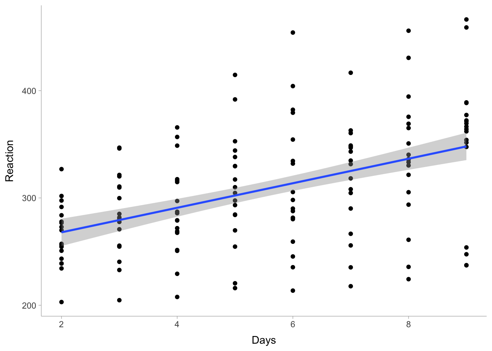
using careful notation, write out the model
I might write the model like this:
\begin{aligned} \text{Reaction}_{i} & \sim \mathrm{Normal}(\mu, \sigma) \\ \mu_i & = \alpha + \beta \times\text{Days}_i\\ \alpha & \sim \mathrm{Normal}(245. 50)\\ b_1 & \sim \mathrm{Normal}(20,50)\\ \sigma &\sim \mathrm{Normal}(20,50)\\ \end{aligned}
A. Suppose instead that we (incorrectly) took a no pooling approach in our sleep study analysis.To explore the no pooled behavior of the data points, construct and discuss separate scatterplots of Reaction by Days for each Subject, including subject-specific trend lines.
Again, I’m able to do all that the question asks within ggplot by calling stan_glm and using facet_wrap() to the same operation for each subjct separately. This works fine, but we might be a little skeptical of for example subject 335, who got faster as the days go by. A partial pooling approach would probably adjust their scores a little.
ggplot(s, aes(x = Days, y = Reaction, color =Subject)) +
geom_point() +
facet_wrap(vars(Subject))+
geom_smooth(method = glm, level = 0.90, aes(fill = Subject)) +
theme_light()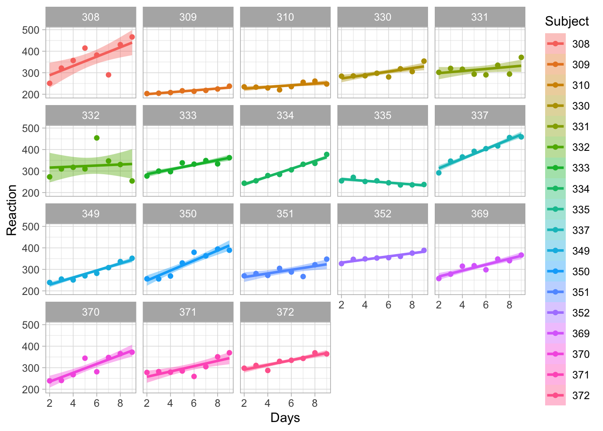
C. I think the question was to write the model out in notation.
If we write this out into a nice model notation, what does it look like? Something like this.
\begin{aligned} \text{Reaction}_{i} & \sim \mathrm{Normal}(\mu, \sigma) \\ \mu_i & = \alpha + \alpha_\text{subject} + \beta\text{Days}_i\\ \alpha & \sim \mathrm{Normal}(245. 50)\\ \alpha_\text{subject} & \sim \mathrm{Normal}(0, 30) & \text{for j = 1, 2, 3...18}\\ \beta & \sim \mathrm{Normal}(20,50)\\ \sigma &\sim \mathrm{Normal}(20,50)\\ \end{aligned}
MN1: Do the tadpole simulation from the book (section 13.2), but for another scenario (other true parameters of your choice),and display result as Fig.13.1 andFig 13.3. Briefly compare results if your McElreath’s simulation.
I’m going to start in the same order as MN, and repeat McElreath’s model
\begin{aligned} S_i &\sim \mathrm{Binomial}(N_i, p_i)\\ logit_p &= \alpha_{\text{POND[i]}}\\ \alpha_j &\sim \mathrm{Normal(\bar{\alpha}, \sigma)}\\ \bar{\alpha} &\sim \mathrm{Normal}(0,1.5)\\ \sigma &\sim \mathrm{Exponential}(1) \end{aligned}
I’ll be using McElreath’s code to make the simulations, but turning it into a function to be able to carry it out many times and compare the effects of using many different parameters. The code chunk below
sim_tads <- function(a_bar =2, sigma = 0.1, nponds = 60, nclusters = 60, title = "opps, forgot to add a title"){
a_bar <- a_bar
sigma <- sigma
nclusters <- nclusters
ni <- as.integer(rep(c(5,10,25,35), each = 15))
set.seed(5005)
#true params
true_a <- rnorm(nponds, mean = a_bar, sd = sigma)
dsim <- data.frame(pond = 1:nponds, ni = ni, true_a = true_a)
dsim$true_p <- plogis(dsim$true_a)
dsim$si <- rbinom(nponds, size = dsim$ni, prob = dsim$true_p)
#make a dataframe
dat <- list(si = dsim$si, ni = dsim$ni, pond = dsim$pond)
#fit a model, do the pooling
fit <- ulam(
alist(
si ~ dbinom(ni, p),
logit(p) <- a_pond[pond],
a_pond[pond] ~ dnorm(a_bar, sigma),
a_bar ~ dnorm(0, 1.5),
sigma ~ dexp(1)
),
data = dat, chains = 4, refresh = 0
)
dsim$p_nopol <- dsim$si/dsim$ni
post <- extract.samples(fit)
dsim$p_partpool <- apply(plogis(post$a_pond), 2, median)
# Calculate errors
nopool_error <- abs(dsim$p_nopol-dsim$true_p)
partpool_error <- abs(dsim$p_partpool-dsim$true_p)
plot(dsim$pond, dsim$p_nopol, pch = 21, bg = "blue", xlab = "Pond ID",
ylab = "Estimated Survival Probability", main = title)
points(dsim$pond, dsim$p_partpool, pch = 21, bg = "white")
# points(dsim$pond, dsim$true_p, pch = "X")
pbar <- plogis(median(post$a_bar))
lines(c(0, 61), c(pbar, pbar), col = "red", lty = 3)
lines(c(15.5, 15.5), c(0, 1.1), col = "grey")
lines(c(30.5, 30.5), c(0, 1.1), col = "grey")
lines(c(45.5, 45.5), c(0, 1.1), col = "grey")
# Average error per pond-size
error_avg <- aggregate(list(nopool_error = nopool_error),
list(pondsize = dsim$ni), mean)
error_avg$partpool_error <- aggregate(partpool_error, list(dsim$ni), mean)[, 2]
round(error_avg, 2)
plot(dsim$pond, nopool_error, pch = 21, bg = "blue", xlab = "Pond ID",
ylab = "Absolute error", main = title)
points(dsim$pond, partpool_error, pch = 21, bg = "white")
lines(c(0, 61), c(pbar, pbar), col = "red", lty = 3)
lines(c(15.5, 15.5), c(0, 1.1), col = "grey")
lines(c(30.5, 30.5), c(0, 1.1), col = "grey")
lines(c(45.5, 45.5), c(0, 1.1), col = "grey")
# Add lines for average error
for (j in 0:3) {
lines(c(1 + 15*j, 14 + 15*j), c(error_avg[j+1, 2], error_avg[j+1, 2]), col = "blue" )
lines(c(1 + 15*j, 14 + 15*j), c(error_avg[j+1, 3], error_avg[j+1, 3]), lty = 2)
}
}And now let’s put that function to use and try out some variations of different parameters
sim_tads(title = "A bar = 2, Sigma = 0.1") ## McElreaths' baseline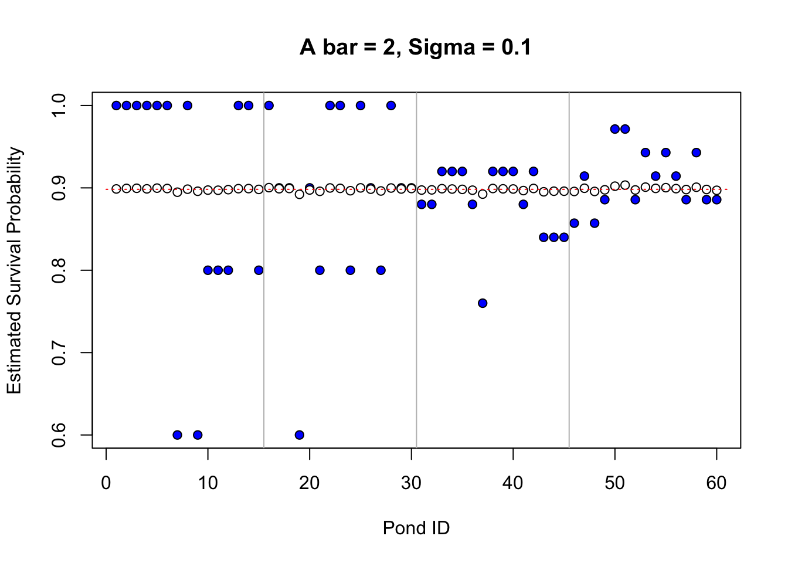
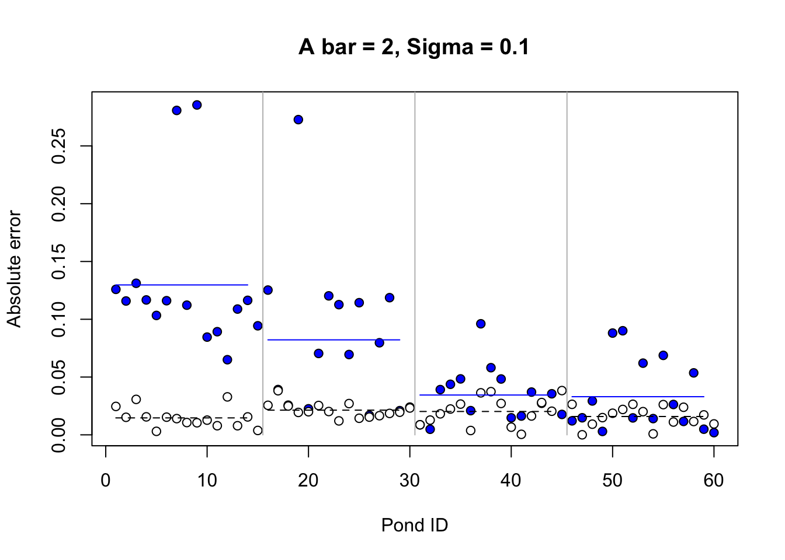
sim_tads(a_bar = 0.8, title = "A_bar = 0.8, Sigma = 0.1") # low a bar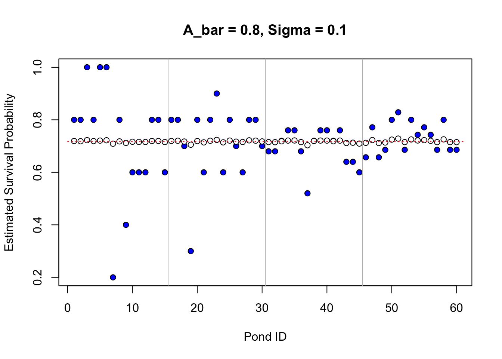
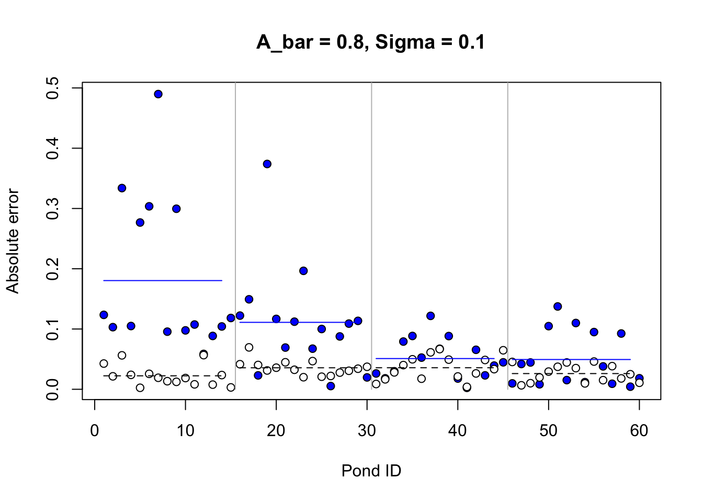
sim_tads(sigma = 0.5, title = "A bar = 10, Sigma = 5") #Large sigma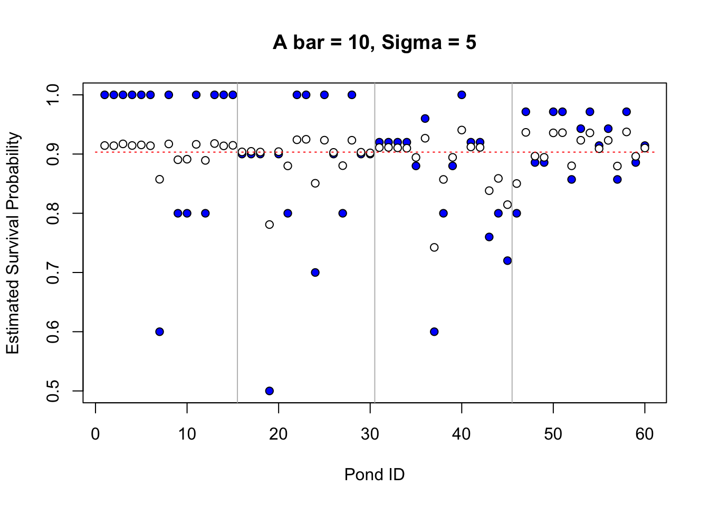
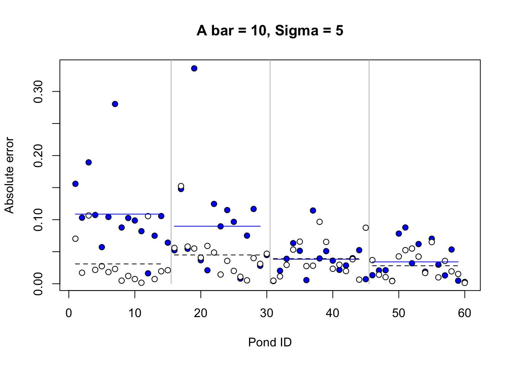
sim_tads(a_bar = 10, title = "A bar = 10, Sigma = 0.1") #High a bar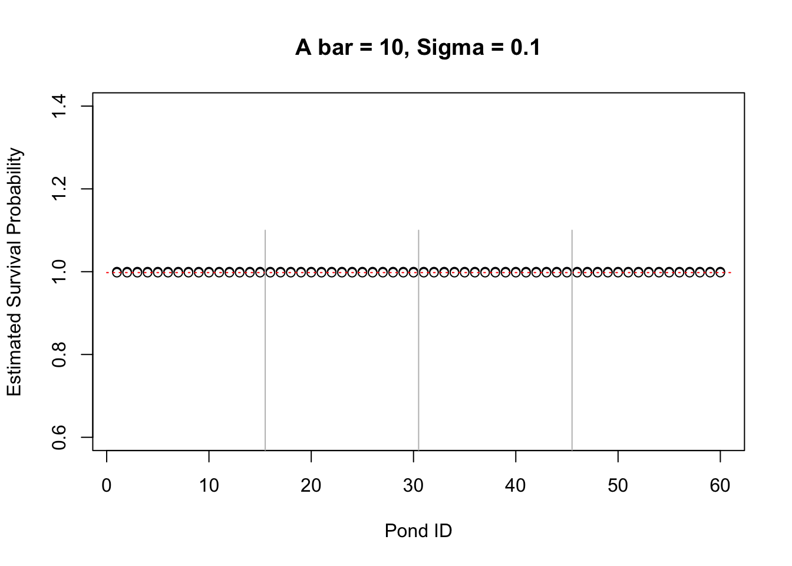
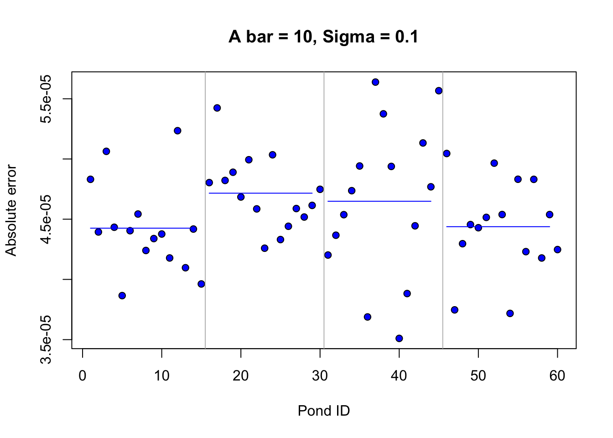
Seenms like a few things happend here. First, when the survival rate was esentially, 100%, increasing clusters did not have any effect on the error rate. In all cases, there was more pooling with fewer smaller clusters, as we would expect.
My answers to the medium questions in chapter 13.
The question says:
“Revisit the Reed frog survival data, data(reedfrogs), and add the predation and size treatment variables to the varying intercepts model. Consider models with either main effect alone, both main effects, as well as a model including both and their interaction. Instead of focusing on inferences about these two predictor variables, focus on the inferred variation across tanks. Explain why it changes as it does across models.”
We’ll start with a null model (M0), that includes unique intercepts for tank.
\begin{aligned} S_i &\sim \mathrm{Binomial}(N_i, p_i)\\ logit_p &= \alpha_{\text{TANK[i]}}\\ \alpha_j &\sim \mathrm{Normal(\bar{\alpha}, \sigma)}\\ \bar{\alpha} &\sim \mathrm{Normal}(0,1.5)\\ \sigma &\sim \mathrm{Exponential}(1) \end{aligned}
And of course, specify it using rethinking code.
data(reedfrogs)
d <- reedfrogs %>%
mutate(tank = 1:48)
dat <- tibble(
S = d$surv,
N = d$density,
size = d$size,
pred = d$pred,
tank = d$tank,
)
m0 <- ulam(
alist(
S ~ dbinom(N, p),
logit(p) <- a[tank],
a[tank] ~ dnorm(a_bar, sigma),
a_bar ~ dnorm(0, 1.5),
sigma ~ dexp( 1 )
), data = dat , chains = 4 , log_lik = TRUE, refresh = 0)Now, we do a more complicated model with main effects of both size and predation.
m_size <- ulam(
alist(
S ~ dbinom(N, p),
logit(p) <- a[tank] + size,
a[tank] ~ dnorm(a_bar, sigma),
a_bar ~ dnorm(0, 1.5),
sigma ~ dexp( 1 ),
size ~ dnorm(0, 1.5)
), data = dat , chains = 4 , log_lik = TRUE, refresh = 0)
post_size <- extract.samples(m_size)
sigma_size <-c(median(post_size$sigma), HPDI(post_size$sigma))
m_pred <- ulam(
alist(
S ~ dbinom(N, p),
logit(p) <- a[tank] + bpred*pred,
a[tank] ~ dnorm(a_bar, sigma),
a_bar ~ dnorm(0, 1.5),
sigma ~ dexp( 1 ),
bpred ~ dnorm(0, 1.5)
), data = dat , chains = 4 , log_lik = TRUE, refresh = 0)
post_pred <- extract.samples(m_pred)
sigma_pred <-c(median(post_pred$sigma), HPDI(post_pred$sigma))
m_mfx <- ulam(
alist(
S ~ dbinom(N, p),
logit(p) <- a[tank] + bsize*size + bpred*pred,
a[tank] ~ dnorm(a_bar, sigma),
a_bar ~ dnorm(0, 1.5),
sigma ~ dexp( 1 ),
bsize ~ dnorm(0, 1.5),
bpred ~ dnorm(0, 1.5)
), data = dat , chains = 4 , log_lik = TRUE, refresh = 0)
post_mfx <- extract.samples(m_mfx)
sigma_mfx <-c(median(post_mfx$sigma), HPDI(post_mfx$sigma))
m_int <- ulam(
alist(
S ~ dbinom(N, p),
logit(p) <- a[tank] + apred[pred] + bsize[pred] * size ,
a[tank] ~ dnorm(a_bar, sigma),
a_bar ~ dnorm(0, 1.5),
sigma ~ dexp( 1 ),
apred[pred] ~ dnorm(0, 1.5),
bsize[pred] ~ dnorm(0, 1.5)
), data = dat , chains = 4 , log_lik = TRUE, refresh = 0)
# Sample from the posterior and calculate highest posterior density intercals
post_int <- extract.samples(m_int)
sigma_int <-c(median(post_int$sigma), HPDI(post_int$sigma))We did this in class, so I’m going to highlight the important part, that we saw changes in sigma, but nothing else
rbind(sigma_size, sigma_pred, sigma_mfx, sigma_int) |0.89 0.89|
sigma_size 1.6022450 1.260830 1.940020
sigma_pred 0.8282230 0.606508 1.072970
sigma_mfx 0.7807715 0.532715 1.004420
sigma_int 0.7352635 0.505847 0.958208Seems like including predator reduces sigma, but that’s it!
“Compare the models you fit just above, using WAIC. Can you reconcile the differences in WAIC with the posterior distributions of the models?”
compare(m_mfx, m_size, m_int, m_pred) WAIC SE dWAIC dSE pWAIC weight
m_pred 198.8102 8.558102 0.000000 NA 19.07236 0.4800545
m_size 200.3282 6.985034 1.518007 5.522176 20.95642 0.2247292
m_int 200.7218 9.417068 1.911592 3.467001 19.55025 0.1845838
m_mfx 201.7456 8.556314 2.935372 3.312773 19.82517 0.1106325The waic values are pretty similar. Maybe that’s because our ability to predict the data didn’t change much.
Re-estimate the basic Reed frog varying intercept model, but now using a Cauchy distribution in place of the Gaussian distribution for the varying intercepts.”
Compare the posterior means of the intercepts, tank, to the posterior means produced in the chapter, using the customary Gaussian prior. Can you explain the pattern of differences? Take note of any change in the mean α as well.”
I start by fitting Gaussian and Cauchy models, like the question asks.
m_cauchy <- ulam(
alist(
S ~ dbinom(N, p),
logit(p) <- a[tank],
a[tank] ~ dcauchy(a_bar, sigma),
a_bar ~ dnorm(0, 1.5),
sigma ~ dexp( 1 )
), data = dat , chains = 4 , log_lik = TRUE, refresh = 0)
m_gaussian <- ulam(
alist(
S ~ dbinom(N, p),
logit(p) <- a[tank],
a[tank] ~ normal(a_bar, sigma),
a_bar ~ dnorm(0, 1.5),
sigma ~ dexp( 1 )
), data = dat , chains = 4 , log_lik = TRUE, refresh = 0)Okay, first, we are going to sample from the posterior distrbutions
post_cauchy <- extract.samples(m_cauchy)
post_gaussian <- extract.samples(m_gaussian)And then compare the values that we get from that
# Yes, using this unweieldy code
cauchy_abar = c(median(post_cauchy$a_bar), HPDI(post_cauchy$a_bar))
cauchy_sigma = c(median(post_cauchy$sigma), HPDI(post_cauchy$sigma))
gaussian_abar = c(median(post_gaussian$a_bar), HPDI(post_gaussian$a_bar))
gaussian_sigma = c(median(post_gaussian$sigma), HPDI(post_gaussian$sigma))
rbind(cauchy_abar, gaussian_abar, cauchy_sigma, gaussian_sigma) |0.89 0.89|
cauchy_abar 1.486720 1.025860 1.97314
gaussian_abar 1.347780 0.930674 1.74534
cauchy_sigma 0.999007 0.665019 1.41823
gaussian_sigma 1.598365 1.291630 1.92991And doing this, it seems that cauchy leads to wider posteriors for abar and lower estimates of sigma.
“Now use a Student-t distribution with ν=2 for the intercepts: αTANK~Student(2,α,σ) Refer back to the Student-t example in Chapter 7 (page 234), if necessary. Compare the resulting posterior to both the original model and the Cauchy model in 13M3. Can you explain the differences and similarities in shrinkage in terms of the properties of these distributions?”
m_student <- ulam(
alist(
S ~ dbinom(N, p),
logit(p) <- a[tank],
a[tank] ~ dstudent(nu = 2, a_bar, sigma),
a_bar ~ dstudent(nu = 2, 0, 1.5),
sigma ~ dexp(1)
), data = dat , chains = 4 , log_lik = TRUE, refresh = 0)Doing the same as in m3:
post_student <- extract.samples(m_student)
student_abar = c(median(post_student$a_bar), HPDI(post_student$a_bar))
student_sigma = c(median(post_student$sigma), HPDI(post_student$sigma))And then putting it all together again
rbind(cauchy_abar, gaussian_abar, student_abar, cauchy_sigma, gaussian_sigma, student_sigma) |0.89 0.89|
cauchy_abar 1.486720 1.025860 1.97314
gaussian_abar 1.347780 0.930674 1.74534
student_abar 1.407340 0.920477 1.81295
cauchy_sigma 0.999007 0.665019 1.41823
gaussian_sigma 1.598365 1.291630 1.92991
student_sigma 1.250430 0.945971 1.61692It seems like student’s distribution is somewhere between gaussian and cauchy
MN2: (a) Fit a varying intercept model to the running data, using rethinking::ulam or rstanarm::stan_glmer (or both). Visualize the results. (b) Do the same for the sleepstudy data.
First, load the data and wrangle it lightly. The running data shows the effect of aging on running speeds.
data("cherry_blossom_sample")
dat <- cherry_blossom_sample %>%
mutate(age_c = age - 55) %>%
na.omit()Fit a simple varying intercepts model
m_runner <- ulam(
alist(
net ~ dnorm(mu, sigma),
mu<- a[runner] + bage*age_c,
a[runner] ~ normal( a_bar, sigma_a),
a_bar ~ dnorm(100, 10),
bage ~ normal(0, 5),
sigma ~ dexp(0.1),
sigma_a ~ dexp(0.11)
), data = dat , chains = 4 , log_lik = TRUE, refresh = 0)How to visualize this? Maybe an overall plot with all the data and then a few plots for the individual runners to show that this is not good enough. The first plot shows the overall relationship between age and time. This is the unpooled data. Next, the data for individual runners is shown. The black line represents the complete pooling and the blue line shows partial pooling using the intercepts only model.
post <- extract.samples(m_runner)$a %>% # get the intercepts for each runner in a dataframe
as_tibble() %>%
pivot_longer(cols = everything(), names_to = "runner") %>%
group_by(runner) %>%
summarise(intercept = median(value)) %>%
mutate(runner = gsub("V", "", runner) %>% as.factor()) %>%
arrange(runner)
dat_combined <- dat %>% #add the intercepts to our original runner dataset
left_join(post, by = "runner")
dat %>% ggplot(aes(x = age_c, y = net)) + #plot the complete pooling data
geom_point() +
geom_abline(intercept = 90.70, slope = 1.23, linetype = "dashed", color = "black") +
theme_classic()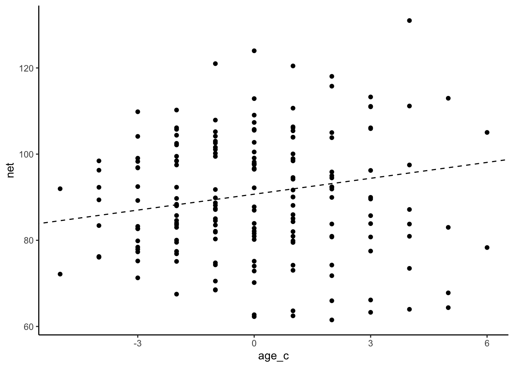
dat_combined %>% ggplot(aes(x = age_c, y = net)) + # again, fill in with numbers from m_runner
geom_point() +
facet_wrap("runner") +
geom_abline(aes(intercept = intercept, slope = 1.23), linetype = "dashed", color = "blue")+
geom_abline(aes(intercept = 90.70, slope = 1.23), linetype = "dashed", color = "black")+
theme_classic()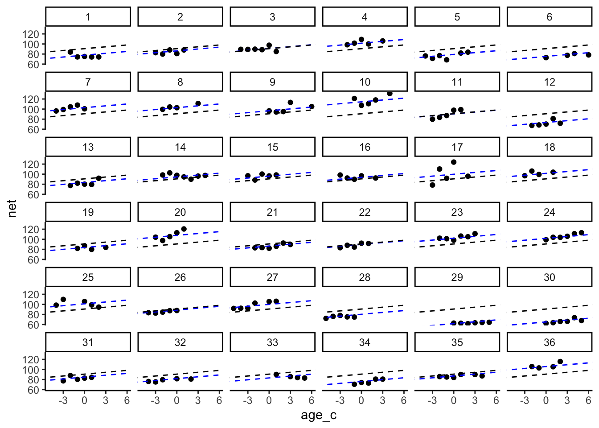
For this model, we want to predict Reaction time as a function of days and subject.
d <- sleepstudy %>% filter(Days>1) %>% mutate(Days_bl = Days-2)
m_sleep <- ulam(
alist(
Reaction ~ dnorm(mu, sigma),
mu<- a[Subject] + b_days*Days_bl,
a[Subject] ~ normal( a_bar, sigma_a),
a_bar ~ dnorm(250, 200),
b_days ~ normal(0,100),
sigma ~ dexp(0.1),
sigma_a ~ dexp(0.1)
), data = d , chains = 4 , refresh = 0)I’m going to come back to this, but here is the code to visualize the data. The first plot shows the overall relationship between age and time. This is the unpooled data. Next, the data for individual runners is shown. The black line represents the complete pooling.
post <- extract.samples(m_sleep)$a %>%
as_tibble() %>%
pivot_longer(cols = everything(), names_to = "Subject") %>%
group_by(Subject) %>%
summarise(intercept = median(value)) %>%
mutate(Subject = gsub("V", "", Subject) %>% as.integer()) %>%
arrange(Subject)
d_combined <- d %>% # add each person's intercept, useful for making the figure
mutate(Subject = as.integer(as.factor(Subject))) %>%
left_join(post, by = "Subject")
d_combined <- d_combined %>% #calculate the unpooled median for each subject
group_by(Subject) %>%
mutate(unpooled = median(Reaction)) %>%
ungroup()
d %>% ggplot(aes(x = Days_bl, y = Reaction)) +
geom_point() +
geom_abline(intercept = 267.72, slope = 11.47, linetype = "dashed", color = "black") + # fill in with numbers from m_sleep
theme_classic()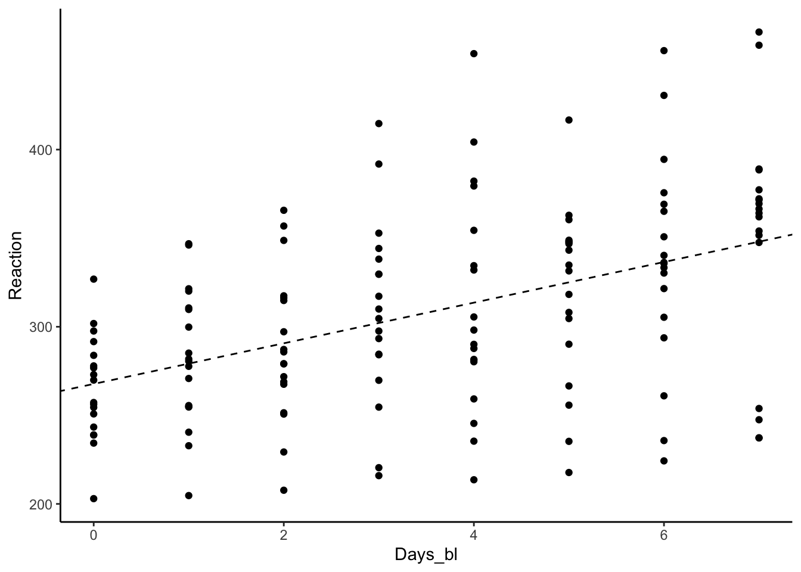
d_combined %>% ggplot(aes(x = Days_bl, y = Reaction)) + # again, fill in with numbers from m_sleep
geom_point() +
facet_wrap("Subject") +
geom_abline(aes(intercept = intercept, slope = 11.47), linetype = "dashed", color = "blue")+
geom_abline(aes(intercept = 267.72, slope = 11.47), linetype = "dashed", color = "black")+
theme_classic()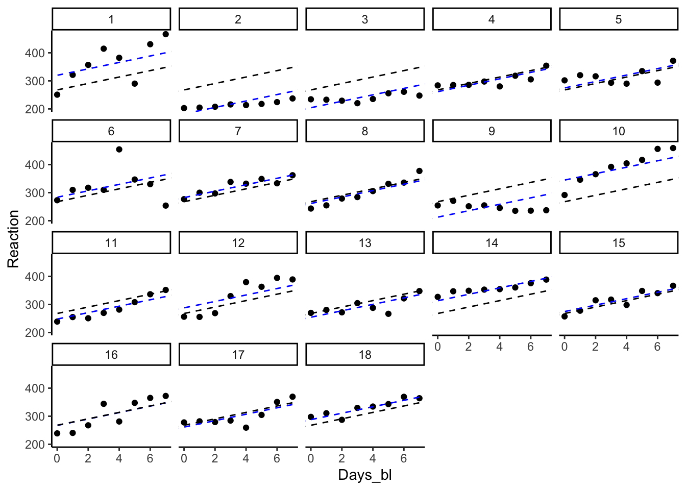
“Repeat the café robot simulation from the beginning of the chapter. This time, set rho to zero, so that there is no correlation between intercepts and slopes. How does the posterior distribution of the correlation reflect this change in the underlying simulation?”
To answer this questions, I’ve made a function using McElreath’s code - sim_mvn().
library(MASS) # had to load this, seems some other package was overwriting the mvrnorm function
Attaching package: 'MASS'The following object is masked from 'package:dplyr':
selectsim_mvn <- function(rho){
a <- 3.5 # average morning wait time
b <- (-1) # average differene afternon wait time
sigma_a <- 1 #std dev in intercepts
sigma_b <- 0.5 #sd in slopes
rho <- rho # no correlation
mu <- c(a,b)
sigmas <- c(sigma_a, sigma_b) #standard deviations
Rho <- matrix(c(1, rho, rho, 1), nrow = 2) #correlation matrix
sigma <- diag(sigmas) %*% Rho %*% diag(sigmas)
n_cafes = 20 #the number of cafes
mvrnorm(n_cafes, mu, sigma) %>%
as_tibble() %>%
rename("Intercepts" = V1,
"Slopes" = V2) %>%
ggplot(aes(x = Intercepts, y = Slopes))+
geom_point() +
stat_ellipse(level = 0.9, color = 4) + #This code feels a little sloppy, but I couldn't figure out a better way
stat_ellipse(level = 0.7, color = 4) +
stat_ellipse(level = 0.5, color = 4) +
stat_ellipse(level = 0.3, color = 4) +
stat_ellipse(level = 0.1, color = 4)+
theme_classic()
}And now I carry out this function over rho of 0.1, 0.5, and 0.7.
sim_mvn(rho = 0.1)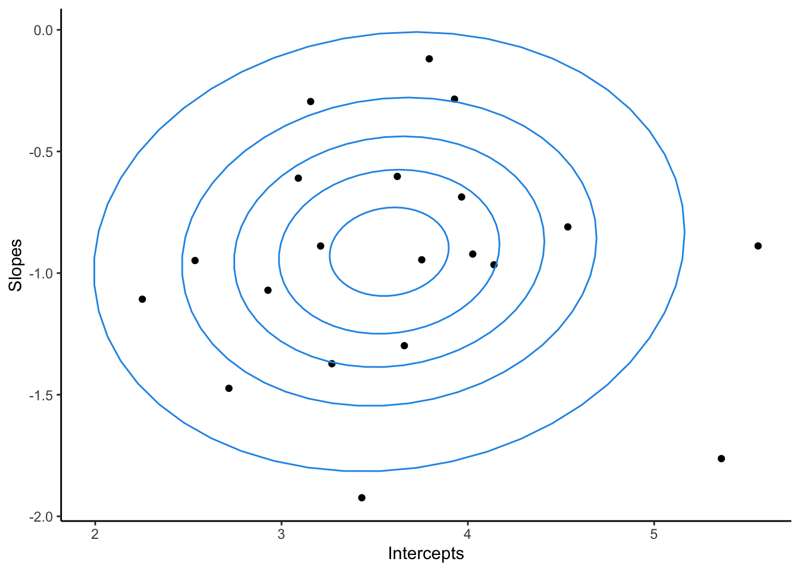
sim_mvn(rho = 0.5)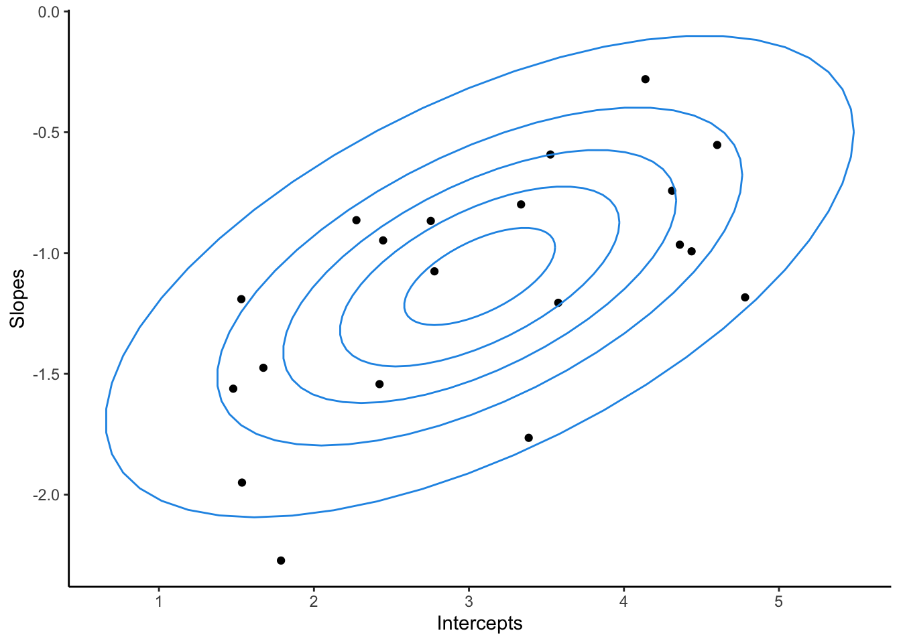
sim_mvn(rho = 0.7)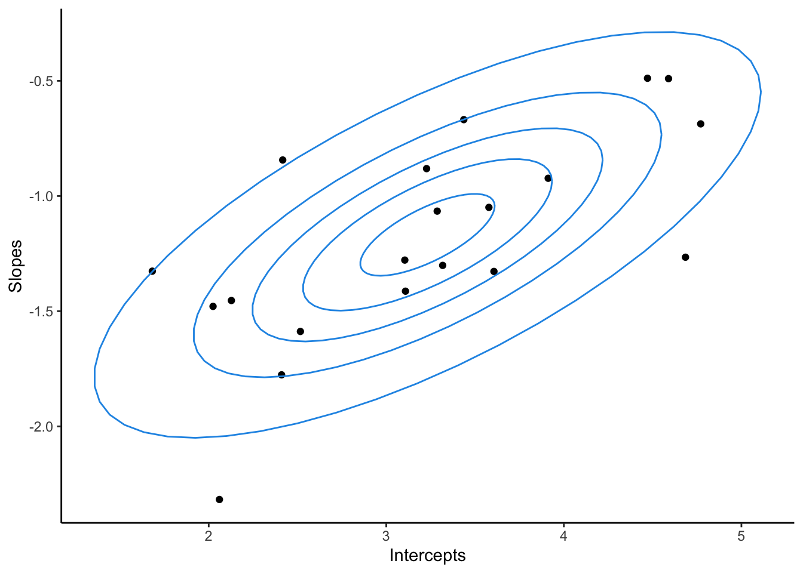
The question was, how does the posterior distribution refelct this change. And it seems like, well, the two values are not as correlated. Also the ellipses are way less round. Seems like this doesn’t actually answer the question, but the graphs look neat, so I’m going to keep them!
Instead, I’m going to keep going and carry out the cafe simulations using McElreath’s code.
a <- 3.5 # average morning wait time
b <- (-1) # average differene afternon wait time
sigma_a <- 1 #std dev in intercepts
sigma_b <- 0.5 #sd in slopes
rho <- 0 # no correlation
mu <- c(a,b)
sigmas <- c(sigma_a, sigma_b) #standard deviations
Rho <- matrix(c(1, rho, rho, 1), nrow = 2) #correlation matrix
sigma <- diag(sigmas) %*% Rho %*% diag(sigmas)
n_cafes = 20 #the number of cafes
vary_effects <- mvrnorm(n_cafes, mu, sigma) %>%
as_tibble() %>%
rename("Intercepts" = V1,
"Slopes" = V2)
a_cafe =vary_effects$Intercepts
b_cafe = vary_effects$Slopes
n_visits = 20 # how many visits?
afternoon = rep(0:1, n_visits * n_cafes/2)
cafe_id = rep(1: n_cafes, each = n_visits)
mu = a_cafe[cafe_id]*b_cafe[cafe_id]*afternoon
sigma = 0.5
wait = rnorm(n_visits*n_cafes, mu, sigma)
d = tibble(cafe = cafe_id, afternoon = afternoon, wait = wait)Having simulated data, let’s fit a model. The question is, when rho is zero how do our posteriors differ from our priors?
m_cafesim <- ulam(
alist(
wait ~ normal(mu, sigma),
mu <- a_cafe[cafe] + b_cafe[cafe]*afternoon,
c(a_cafe, b_cafe)[cafe] ~ multi_normal(c(a,b), rho, sigma_cafe),
a ~ normal(5,2),
b ~ normal(-1, 0.5),
sigma_cafe ~ exponential(1),
sigma ~ exponential(1),
rho ~ lkj_corr(2)),
data = d,
chains = 4,
cores = 4
)Having fit the model, let’s plot the posterior against the prior. What do we get?
post = extract.samples(m_cafesim)
dens( post$rho[,1,2] , xlim=c(-1,1) )
R <- rlkjcorr( 1e4 , K=2 , eta=2 )# prior
dens( R[,1,2] , add=TRUE , lty=2 )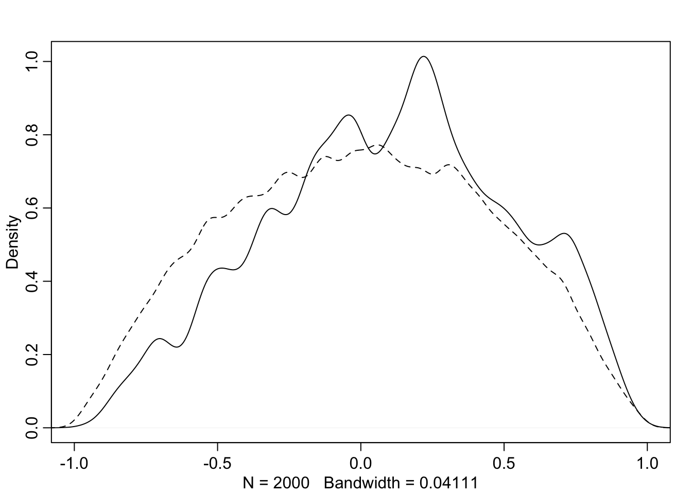
Ah. It seems the takeaway is that the posterior is almost exactly the same as the prior.
“Fit this multilevel model to the simulated café data:
\begin{aligned} \text{Wait}_{i} & \sim \mathrm{Normal}(\mu_{i}, \sigma) \\ \mu_i & = \alpha_{\text{CAFE}[i]} +\beta_{\text{CAFE}[i]}\text{A}_i\\ \alpha_{\text{CAFE}[i]} & \sim \mathrm{Normal}(\alpha, \sigma_{\alpha})\\ \beta_{\text{CAFE}[i]} & \sim \mathrm{Normal}(\beta, \sigma_{\beta})\\ \alpha & \sim \mathrm{Normal}(0,10)\\ \beta & \sim \mathrm{Normal}(0,3)\\ \sigma, \sigma_{\alpha}, \sigma_{\beta} &\sim \mathrm{Exponential}(1)\\ \end{aligned} I think McElreath forgot to add something here, maybe an extra \beta somewhere. So I stuck one in there, with what seemed like a vaguely reasonable prior.
Use WAIC to compare this model to the model from the chapter, the one that uses a multi-variate Gaussian prior. Explain the result.”
McElreath is a little bit unclear here, but I assume he means that we should use his original simulation, not the one we did just now, so that’s what I’m going to do.
library(MASS)
a <- 3.5 # average morning wait time
b <- (-1) # average differene afternon wait time
sigma_a <- 1 #std dev in intercepts
sigma_b <- 0.5 #sd in slopes
rho <- 0.7 # no correlation
mu <- c(a,b)
sigmas <- c(sigma_a, sigma_b) #standard deviations
Rho <- matrix(c(1, rho, rho, 1), nrow = 2) #correlation matrix
sigma <- diag(sigmas) %*% Rho %*% diag(sigmas)
n_cafes = 20 #the number of cafes
vary_effects <- mvrnorm(n_cafes, mu, sigma) %>%
as_tibble() %>%
rename("Intercepts" = V1,
"Slopes" = V2)
a_cafe =vary_effects$Intercepts
b_cafe = vary_effects$Slopes
n_visits = 20 # how many visits?
afternoon = rep(0:1, n_visits * n_cafes/2)
cafe_id = rep(1: n_cafes, each = n_visits)
mu = a_cafe[cafe_id]+b_cafe[cafe_id]*afternoon
sigma = 0.5
wait = rnorm(n_visits*n_cafes, mu, sigma)
d = tibble(cafe = cafe_id, afternoon = afternoon, wait = wait)having simulated the data, let’s fit two models, one with covarying slopes and intercepts and one just varying slopes & intercepts.
#no covariation
m_novariation <- ulam(
alist(
wait ~ normal(mu, sigma),
mu <- a[cafe] + b[cafe]*afternoon,
a[cafe] ~ normal(a, sigma_a),
b[cafe] ~ normal(b, sigma_b),
a ~ normal(0,10),
b ~ normal(0, 3),
sigma ~ exponential(1),
sigma_a ~ exponential(1),
sigma_b ~ exponential(1),
rho ~ lkj_corr(2)),
data = d,
chains = 4,
cores = 4,
log_lik = TRUE
)Running MCMC with 4 parallel chains, with 1 thread(s) per chain...
Chain 1 Iteration: 1 / 1000 [ 0%] (Warmup)
Chain 1 Iteration: 100 / 1000 [ 10%] (Warmup)
Chain 1 Iteration: 200 / 1000 [ 20%] (Warmup) Chain 1 Informational Message: The current Metropolis proposal is about to be rejected because of the following issue:Chain 1 Exception: normal_lpdf: Scale parameter is 0, but must be positive! (in '/var/folders/ky/9r71kfzx25d43wn2dtb6y_080000gp/T/Rtmplj1Apz/model-177a62a730eb6.stan', line 22, column 4 to column 30)Chain 1 If this warning occurs sporadically, such as for highly constrained variable types like covariance matrices, then the sampler is fine,Chain 1 but if this warning occurs often then your model may be either severely ill-conditioned or misspecified.Chain 1 Chain 1 Informational Message: The current Metropolis proposal is about to be rejected because of the following issue:Chain 1 Exception: normal_lpdf: Scale parameter is 0, but must be positive! (in '/var/folders/ky/9r71kfzx25d43wn2dtb6y_080000gp/T/Rtmplj1Apz/model-177a62a730eb6.stan', line 22, column 4 to column 30)Chain 1 If this warning occurs sporadically, such as for highly constrained variable types like covariance matrices, then the sampler is fine,Chain 1 but if this warning occurs often then your model may be either severely ill-conditioned or misspecified.Chain 1 Chain 1 Informational Message: The current Metropolis proposal is about to be rejected because of the following issue:Chain 1 Exception: normal_lpdf: Scale parameter is 0, but must be positive! (in '/var/folders/ky/9r71kfzx25d43wn2dtb6y_080000gp/T/Rtmplj1Apz/model-177a62a730eb6.stan', line 22, column 4 to column 30)Chain 1 If this warning occurs sporadically, such as for highly constrained variable types like covariance matrices, then the sampler is fine,Chain 1 but if this warning occurs often then your model may be either severely ill-conditioned or misspecified.Chain 1 Chain 1 Informational Message: The current Metropolis proposal is about to be rejected because of the following issue:Chain 1 Exception: normal_lpdf: Scale parameter is 0, but must be positive! (in '/var/folders/ky/9r71kfzx25d43wn2dtb6y_080000gp/T/Rtmplj1Apz/model-177a62a730eb6.stan', line 23, column 4 to column 30)Chain 1 If this warning occurs sporadically, such as for highly constrained variable types like covariance matrices, then the sampler is fine,Chain 1 but if this warning occurs often then your model may be either severely ill-conditioned or misspecified.Chain 1 Chain 2 Iteration: 1 / 1000 [ 0%] (Warmup)
Chain 2 Iteration: 100 / 1000 [ 10%] (Warmup)
Chain 2 Iteration: 200 / 1000 [ 20%] (Warmup) Chain 2 Informational Message: The current Metropolis proposal is about to be rejected because of the following issue:Chain 2 Exception: normal_lpdf: Scale parameter is 0, but must be positive! (in '/var/folders/ky/9r71kfzx25d43wn2dtb6y_080000gp/T/Rtmplj1Apz/model-177a62a730eb6.stan', line 27, column 4 to column 32)Chain 2 If this warning occurs sporadically, such as for highly constrained variable types like covariance matrices, then the sampler is fine,Chain 2 but if this warning occurs often then your model may be either severely ill-conditioned or misspecified.Chain 2 Chain 2 Informational Message: The current Metropolis proposal is about to be rejected because of the following issue:Chain 2 Exception: normal_lpdf: Scale parameter is 0, but must be positive! (in '/var/folders/ky/9r71kfzx25d43wn2dtb6y_080000gp/T/Rtmplj1Apz/model-177a62a730eb6.stan', line 22, column 4 to column 30)Chain 2 If this warning occurs sporadically, such as for highly constrained variable types like covariance matrices, then the sampler is fine,Chain 2 but if this warning occurs often then your model may be either severely ill-conditioned or misspecified.Chain 2 Chain 2 Informational Message: The current Metropolis proposal is about to be rejected because of the following issue:Chain 2 Exception: normal_lpdf: Scale parameter is 0, but must be positive! (in '/var/folders/ky/9r71kfzx25d43wn2dtb6y_080000gp/T/Rtmplj1Apz/model-177a62a730eb6.stan', line 22, column 4 to column 30)Chain 2 If this warning occurs sporadically, such as for highly constrained variable types like covariance matrices, then the sampler is fine,Chain 2 but if this warning occurs often then your model may be either severely ill-conditioned or misspecified.Chain 2 Chain 2 Informational Message: The current Metropolis proposal is about to be rejected because of the following issue:Chain 2 Exception: normal_lpdf: Scale parameter is 0, but must be positive! (in '/var/folders/ky/9r71kfzx25d43wn2dtb6y_080000gp/T/Rtmplj1Apz/model-177a62a730eb6.stan', line 22, column 4 to column 30)Chain 2 If this warning occurs sporadically, such as for highly constrained variable types like covariance matrices, then the sampler is fine,Chain 2 but if this warning occurs often then your model may be either severely ill-conditioned or misspecified.Chain 2 Chain 3 Iteration: 1 / 1000 [ 0%] (Warmup)
Chain 3 Iteration: 100 / 1000 [ 10%] (Warmup)
Chain 3 Iteration: 200 / 1000 [ 20%] (Warmup) Chain 3 Informational Message: The current Metropolis proposal is about to be rejected because of the following issue:Chain 3 Exception: normal_lpdf: Scale parameter is 0, but must be positive! (in '/var/folders/ky/9r71kfzx25d43wn2dtb6y_080000gp/T/Rtmplj1Apz/model-177a62a730eb6.stan', line 27, column 4 to column 32)Chain 3 If this warning occurs sporadically, such as for highly constrained variable types like covariance matrices, then the sampler is fine,Chain 3 but if this warning occurs often then your model may be either severely ill-conditioned or misspecified.Chain 3 Chain 3 Informational Message: The current Metropolis proposal is about to be rejected because of the following issue:Chain 3 Exception: normal_lpdf: Scale parameter is 0, but must be positive! (in '/var/folders/ky/9r71kfzx25d43wn2dtb6y_080000gp/T/Rtmplj1Apz/model-177a62a730eb6.stan', line 22, column 4 to column 30)Chain 3 If this warning occurs sporadically, such as for highly constrained variable types like covariance matrices, then the sampler is fine,Chain 3 but if this warning occurs often then your model may be either severely ill-conditioned or misspecified.Chain 3 Chain 3 Informational Message: The current Metropolis proposal is about to be rejected because of the following issue:Chain 3 Exception: normal_lpdf: Scale parameter is 0, but must be positive! (in '/var/folders/ky/9r71kfzx25d43wn2dtb6y_080000gp/T/Rtmplj1Apz/model-177a62a730eb6.stan', line 22, column 4 to column 30)Chain 3 If this warning occurs sporadically, such as for highly constrained variable types like covariance matrices, then the sampler is fine,Chain 3 but if this warning occurs often then your model may be either severely ill-conditioned or misspecified.Chain 3 Chain 3 Informational Message: The current Metropolis proposal is about to be rejected because of the following issue:Chain 3 Exception: normal_lpdf: Scale parameter is 0, but must be positive! (in '/var/folders/ky/9r71kfzx25d43wn2dtb6y_080000gp/T/Rtmplj1Apz/model-177a62a730eb6.stan', line 22, column 4 to column 30)Chain 3 If this warning occurs sporadically, such as for highly constrained variable types like covariance matrices, then the sampler is fine,Chain 3 but if this warning occurs often then your model may be either severely ill-conditioned or misspecified.Chain 3 Chain 3 Informational Message: The current Metropolis proposal is about to be rejected because of the following issue:Chain 3 Exception: normal_lpdf: Scale parameter is 0, but must be positive! (in '/var/folders/ky/9r71kfzx25d43wn2dtb6y_080000gp/T/Rtmplj1Apz/model-177a62a730eb6.stan', line 22, column 4 to column 30)Chain 3 If this warning occurs sporadically, such as for highly constrained variable types like covariance matrices, then the sampler is fine,Chain 3 but if this warning occurs often then your model may be either severely ill-conditioned or misspecified.Chain 3 Chain 4 Iteration: 1 / 1000 [ 0%] (Warmup)
Chain 4 Iteration: 100 / 1000 [ 10%] (Warmup) Chain 4 Informational Message: The current Metropolis proposal is about to be rejected because of the following issue:Chain 4 Exception: normal_lpdf: Scale parameter is 0, but must be positive! (in '/var/folders/ky/9r71kfzx25d43wn2dtb6y_080000gp/T/Rtmplj1Apz/model-177a62a730eb6.stan', line 22, column 4 to column 30)Chain 4 If this warning occurs sporadically, such as for highly constrained variable types like covariance matrices, then the sampler is fine,Chain 4 but if this warning occurs often then your model may be either severely ill-conditioned or misspecified.Chain 4 Chain 4 Informational Message: The current Metropolis proposal is about to be rejected because of the following issue:Chain 4 Exception: normal_lpdf: Scale parameter is 0, but must be positive! (in '/var/folders/ky/9r71kfzx25d43wn2dtb6y_080000gp/T/Rtmplj1Apz/model-177a62a730eb6.stan', line 22, column 4 to column 30)Chain 4 If this warning occurs sporadically, such as for highly constrained variable types like covariance matrices, then the sampler is fine,Chain 4 but if this warning occurs often then your model may be either severely ill-conditioned or misspecified.Chain 4 Chain 4 Informational Message: The current Metropolis proposal is about to be rejected because of the following issue:Chain 4 Exception: normal_lpdf: Scale parameter is 0, but must be positive! (in '/var/folders/ky/9r71kfzx25d43wn2dtb6y_080000gp/T/Rtmplj1Apz/model-177a62a730eb6.stan', line 22, column 4 to column 30)Chain 4 If this warning occurs sporadically, such as for highly constrained variable types like covariance matrices, then the sampler is fine,Chain 4 but if this warning occurs often then your model may be either severely ill-conditioned or misspecified.Chain 4 Chain 4 Informational Message: The current Metropolis proposal is about to be rejected because of the following issue:Chain 4 Exception: normal_lpdf: Scale parameter is 0, but must be positive! (in '/var/folders/ky/9r71kfzx25d43wn2dtb6y_080000gp/T/Rtmplj1Apz/model-177a62a730eb6.stan', line 22, column 4 to column 30)Chain 4 If this warning occurs sporadically, such as for highly constrained variable types like covariance matrices, then the sampler is fine,Chain 4 but if this warning occurs often then your model may be either severely ill-conditioned or misspecified.Chain 4 Chain 4 Informational Message: The current Metropolis proposal is about to be rejected because of the following issue:Chain 4 Exception: normal_lpdf: Scale parameter is 0, but must be positive! (in '/var/folders/ky/9r71kfzx25d43wn2dtb6y_080000gp/T/Rtmplj1Apz/model-177a62a730eb6.stan', line 22, column 4 to column 30)Chain 4 If this warning occurs sporadically, such as for highly constrained variable types like covariance matrices, then the sampler is fine,Chain 4 but if this warning occurs often then your model may be either severely ill-conditioned or misspecified.Chain 4 Chain 1 Iteration: 300 / 1000 [ 30%] (Warmup)
Chain 2 Iteration: 300 / 1000 [ 30%] (Warmup)
Chain 2 Iteration: 400 / 1000 [ 40%] (Warmup)
Chain 3 Iteration: 300 / 1000 [ 30%] (Warmup)
Chain 4 Iteration: 200 / 1000 [ 20%] (Warmup)
Chain 1 Iteration: 400 / 1000 [ 40%] (Warmup)
Chain 2 Iteration: 500 / 1000 [ 50%] (Warmup)
Chain 2 Iteration: 501 / 1000 [ 50%] (Sampling)
Chain 2 Iteration: 600 / 1000 [ 60%] (Sampling)
Chain 2 Iteration: 700 / 1000 [ 70%] (Sampling)
Chain 4 Iteration: 300 / 1000 [ 30%] (Warmup)
Chain 4 Iteration: 400 / 1000 [ 40%] (Warmup)
Chain 4 Iteration: 500 / 1000 [ 50%] (Warmup)
Chain 4 Iteration: 501 / 1000 [ 50%] (Sampling)
Chain 1 Iteration: 500 / 1000 [ 50%] (Warmup)
Chain 1 Iteration: 501 / 1000 [ 50%] (Sampling)
Chain 1 Iteration: 600 / 1000 [ 60%] (Sampling)
Chain 2 Iteration: 800 / 1000 [ 80%] (Sampling)
Chain 2 Iteration: 900 / 1000 [ 90%] (Sampling)
Chain 2 Iteration: 1000 / 1000 [100%] (Sampling)
Chain 3 Iteration: 400 / 1000 [ 40%] (Warmup)
Chain 3 Iteration: 500 / 1000 [ 50%] (Warmup)
Chain 3 Iteration: 501 / 1000 [ 50%] (Sampling)
Chain 4 Iteration: 600 / 1000 [ 60%] (Sampling)
Chain 4 Iteration: 700 / 1000 [ 70%] (Sampling)
Chain 4 Iteration: 800 / 1000 [ 80%] (Sampling)
Chain 2 finished in 0.4 seconds.
Chain 1 Iteration: 700 / 1000 [ 70%] (Sampling)
Chain 1 Iteration: 800 / 1000 [ 80%] (Sampling)
Chain 3 Iteration: 600 / 1000 [ 60%] (Sampling)
Chain 3 Iteration: 700 / 1000 [ 70%] (Sampling)
Chain 4 Iteration: 900 / 1000 [ 90%] (Sampling)
Chain 4 Iteration: 1000 / 1000 [100%] (Sampling)
Chain 4 finished in 0.5 seconds.
Chain 1 Iteration: 900 / 1000 [ 90%] (Sampling)
Chain 1 Iteration: 1000 / 1000 [100%] (Sampling)
Chain 3 Iteration: 800 / 1000 [ 80%] (Sampling)
Chain 3 Iteration: 900 / 1000 [ 90%] (Sampling)
Chain 1 finished in 0.6 seconds.
Chain 3 Iteration: 1000 / 1000 [100%] (Sampling)
Chain 3 finished in 0.7 seconds.
All 4 chains finished successfully.
Mean chain execution time: 0.6 seconds.
Total execution time: 0.8 seconds.Warning: 2000 of 2000 (100.0%) transitions ended with a divergence.
See https://mc-stan.org/misc/warnings for details.#covarying slopes & intercepts
m_covarying <- ulam(
alist(
wait ~ normal(mu, sigma),
mu <- a_cafe[cafe] + b_cafe[cafe]*afternoon,
c(a_cafe, b_cafe)[cafe] ~ multi_normal(c(a,b), rho, sigma_cafe),
a ~ normal(5,2),
b ~ normal(-1, 0.5),
sigma_cafe ~ exponential(1),
sigma ~ exponential(1),
rho ~ lkj_corr(2)),
data = d,
chains = 4,
cores = 4,
log_lik = TRUE
)Running MCMC with 4 parallel chains, with 1 thread(s) per chain...
Chain 1 Iteration: 1 / 1000 [ 0%] (Warmup)
Chain 1 Iteration: 100 / 1000 [ 10%] (Warmup) Chain 1 Informational Message: The current Metropolis proposal is about to be rejected because of the following issue:Chain 1 Exception: lkj_corr_lpdf: Correlation matrix is not positive definite. (in '/var/folders/ky/9r71kfzx25d43wn2dtb6y_080000gp/T/Rtmplj1Apz/model-177a6733816ec.stan', line 17, column 4 to column 24)Chain 1 If this warning occurs sporadically, such as for highly constrained variable types like covariance matrices, then the sampler is fine,Chain 1 but if this warning occurs often then your model may be either severely ill-conditioned or misspecified.Chain 1 Chain 1 Informational Message: The current Metropolis proposal is about to be rejected because of the following issue:Chain 1 Exception: lkj_corr_lpdf: Correlation matrix is not positive definite. (in '/var/folders/ky/9r71kfzx25d43wn2dtb6y_080000gp/T/Rtmplj1Apz/model-177a6733816ec.stan', line 17, column 4 to column 24)Chain 1 If this warning occurs sporadically, such as for highly constrained variable types like covariance matrices, then the sampler is fine,Chain 1 but if this warning occurs often then your model may be either severely ill-conditioned or misspecified.Chain 1 Chain 1 Informational Message: The current Metropolis proposal is about to be rejected because of the following issue:Chain 1 Exception: lkj_corr_lpdf: Correlation matrix is not positive definite. (in '/var/folders/ky/9r71kfzx25d43wn2dtb6y_080000gp/T/Rtmplj1Apz/model-177a6733816ec.stan', line 17, column 4 to column 24)Chain 1 If this warning occurs sporadically, such as for highly constrained variable types like covariance matrices, then the sampler is fine,Chain 1 but if this warning occurs often then your model may be either severely ill-conditioned or misspecified.Chain 1 Chain 1 Informational Message: The current Metropolis proposal is about to be rejected because of the following issue:Chain 1 Exception: lkj_corr_lpdf: Correlation matrix is not positive definite. (in '/var/folders/ky/9r71kfzx25d43wn2dtb6y_080000gp/T/Rtmplj1Apz/model-177a6733816ec.stan', line 17, column 4 to column 24)Chain 1 If this warning occurs sporadically, such as for highly constrained variable types like covariance matrices, then the sampler is fine,Chain 1 but if this warning occurs often then your model may be either severely ill-conditioned or misspecified.Chain 1 Chain 1 Informational Message: The current Metropolis proposal is about to be rejected because of the following issue:Chain 1 Exception: lkj_corr_lpdf: Correlation matrix is not positive definite. (in '/var/folders/ky/9r71kfzx25d43wn2dtb6y_080000gp/T/Rtmplj1Apz/model-177a6733816ec.stan', line 17, column 4 to column 24)Chain 1 If this warning occurs sporadically, such as for highly constrained variable types like covariance matrices, then the sampler is fine,Chain 1 but if this warning occurs often then your model may be either severely ill-conditioned or misspecified.Chain 1 Chain 1 Informational Message: The current Metropolis proposal is about to be rejected because of the following issue:Chain 1 Exception: lkj_corr_lpdf: Correlation matrix is not positive definite. (in '/var/folders/ky/9r71kfzx25d43wn2dtb6y_080000gp/T/Rtmplj1Apz/model-177a6733816ec.stan', line 17, column 4 to column 24)Chain 1 If this warning occurs sporadically, such as for highly constrained variable types like covariance matrices, then the sampler is fine,Chain 1 but if this warning occurs often then your model may be either severely ill-conditioned or misspecified.Chain 1 Chain 1 Informational Message: The current Metropolis proposal is about to be rejected because of the following issue:Chain 1 Exception: lkj_corr_lpdf: Correlation matrix is not positive definite. (in '/var/folders/ky/9r71kfzx25d43wn2dtb6y_080000gp/T/Rtmplj1Apz/model-177a6733816ec.stan', line 17, column 4 to column 24)Chain 1 If this warning occurs sporadically, such as for highly constrained variable types like covariance matrices, then the sampler is fine,Chain 1 but if this warning occurs often then your model may be either severely ill-conditioned or misspecified.Chain 1 Chain 2 Iteration: 1 / 1000 [ 0%] (Warmup)
Chain 2 Iteration: 100 / 1000 [ 10%] (Warmup) Chain 2 Informational Message: The current Metropolis proposal is about to be rejected because of the following issue:Chain 2 Exception: lkj_corr_lpdf: Correlation matrix is not positive definite. (in '/var/folders/ky/9r71kfzx25d43wn2dtb6y_080000gp/T/Rtmplj1Apz/model-177a6733816ec.stan', line 17, column 4 to column 24)Chain 2 If this warning occurs sporadically, such as for highly constrained variable types like covariance matrices, then the sampler is fine,Chain 2 but if this warning occurs often then your model may be either severely ill-conditioned or misspecified.Chain 2 Chain 2 Informational Message: The current Metropolis proposal is about to be rejected because of the following issue:Chain 2 Exception: lkj_corr_lpdf: Correlation matrix is not positive definite. (in '/var/folders/ky/9r71kfzx25d43wn2dtb6y_080000gp/T/Rtmplj1Apz/model-177a6733816ec.stan', line 17, column 4 to column 24)Chain 2 If this warning occurs sporadically, such as for highly constrained variable types like covariance matrices, then the sampler is fine,Chain 2 but if this warning occurs often then your model may be either severely ill-conditioned or misspecified.Chain 2 Chain 2 Informational Message: The current Metropolis proposal is about to be rejected because of the following issue:Chain 2 Exception: lkj_corr_lpdf: Correlation matrix is not positive definite. (in '/var/folders/ky/9r71kfzx25d43wn2dtb6y_080000gp/T/Rtmplj1Apz/model-177a6733816ec.stan', line 17, column 4 to column 24)Chain 2 If this warning occurs sporadically, such as for highly constrained variable types like covariance matrices, then the sampler is fine,Chain 2 but if this warning occurs often then your model may be either severely ill-conditioned or misspecified.Chain 2 Chain 2 Informational Message: The current Metropolis proposal is about to be rejected because of the following issue:Chain 2 Exception: lkj_corr_lpdf: Correlation matrix is not positive definite. (in '/var/folders/ky/9r71kfzx25d43wn2dtb6y_080000gp/T/Rtmplj1Apz/model-177a6733816ec.stan', line 17, column 4 to column 24)Chain 2 If this warning occurs sporadically, such as for highly constrained variable types like covariance matrices, then the sampler is fine,Chain 2 but if this warning occurs often then your model may be either severely ill-conditioned or misspecified.Chain 2 Chain 2 Informational Message: The current Metropolis proposal is about to be rejected because of the following issue:Chain 2 Exception: lkj_corr_lpdf: Correlation matrix is not positive definite. (in '/var/folders/ky/9r71kfzx25d43wn2dtb6y_080000gp/T/Rtmplj1Apz/model-177a6733816ec.stan', line 17, column 4 to column 24)Chain 2 If this warning occurs sporadically, such as for highly constrained variable types like covariance matrices, then the sampler is fine,Chain 2 but if this warning occurs often then your model may be either severely ill-conditioned or misspecified.Chain 2 Chain 2 Informational Message: The current Metropolis proposal is about to be rejected because of the following issue:Chain 2 Exception: lkj_corr_lpdf: Correlation matrix is not positive definite. (in '/var/folders/ky/9r71kfzx25d43wn2dtb6y_080000gp/T/Rtmplj1Apz/model-177a6733816ec.stan', line 17, column 4 to column 24)Chain 2 If this warning occurs sporadically, such as for highly constrained variable types like covariance matrices, then the sampler is fine,Chain 2 but if this warning occurs often then your model may be either severely ill-conditioned or misspecified.Chain 2 Chain 3 Iteration: 1 / 1000 [ 0%] (Warmup)
Chain 3 Iteration: 100 / 1000 [ 10%] (Warmup) Chain 3 Informational Message: The current Metropolis proposal is about to be rejected because of the following issue:Chain 3 Exception: lkj_corr_lpdf: Correlation matrix is not positive definite. (in '/var/folders/ky/9r71kfzx25d43wn2dtb6y_080000gp/T/Rtmplj1Apz/model-177a6733816ec.stan', line 17, column 4 to column 24)Chain 3 If this warning occurs sporadically, such as for highly constrained variable types like covariance matrices, then the sampler is fine,Chain 3 but if this warning occurs often then your model may be either severely ill-conditioned or misspecified.Chain 3 Chain 3 Informational Message: The current Metropolis proposal is about to be rejected because of the following issue:Chain 3 Exception: lkj_corr_lpdf: Correlation matrix is not positive definite. (in '/var/folders/ky/9r71kfzx25d43wn2dtb6y_080000gp/T/Rtmplj1Apz/model-177a6733816ec.stan', line 17, column 4 to column 24)Chain 3 If this warning occurs sporadically, such as for highly constrained variable types like covariance matrices, then the sampler is fine,Chain 3 but if this warning occurs often then your model may be either severely ill-conditioned or misspecified.Chain 3 Chain 3 Informational Message: The current Metropolis proposal is about to be rejected because of the following issue:Chain 3 Exception: lkj_corr_lpdf: Correlation matrix is not positive definite. (in '/var/folders/ky/9r71kfzx25d43wn2dtb6y_080000gp/T/Rtmplj1Apz/model-177a6733816ec.stan', line 17, column 4 to column 24)Chain 3 If this warning occurs sporadically, such as for highly constrained variable types like covariance matrices, then the sampler is fine,Chain 3 but if this warning occurs often then your model may be either severely ill-conditioned or misspecified.Chain 3 Chain 3 Informational Message: The current Metropolis proposal is about to be rejected because of the following issue:Chain 3 Exception: lkj_corr_lpdf: Correlation matrix is not positive definite. (in '/var/folders/ky/9r71kfzx25d43wn2dtb6y_080000gp/T/Rtmplj1Apz/model-177a6733816ec.stan', line 17, column 4 to column 24)Chain 3 If this warning occurs sporadically, such as for highly constrained variable types like covariance matrices, then the sampler is fine,Chain 3 but if this warning occurs often then your model may be either severely ill-conditioned or misspecified.Chain 3 Chain 3 Informational Message: The current Metropolis proposal is about to be rejected because of the following issue:Chain 3 Exception: lkj_corr_lpdf: Correlation matrix is not positive definite. (in '/var/folders/ky/9r71kfzx25d43wn2dtb6y_080000gp/T/Rtmplj1Apz/model-177a6733816ec.stan', line 17, column 4 to column 24)Chain 3 If this warning occurs sporadically, such as for highly constrained variable types like covariance matrices, then the sampler is fine,Chain 3 but if this warning occurs often then your model may be either severely ill-conditioned or misspecified.Chain 3 Chain 3 Informational Message: The current Metropolis proposal is about to be rejected because of the following issue:Chain 3 Exception: lkj_corr_lpdf: Correlation matrix is not positive definite. (in '/var/folders/ky/9r71kfzx25d43wn2dtb6y_080000gp/T/Rtmplj1Apz/model-177a6733816ec.stan', line 17, column 4 to column 24)Chain 3 If this warning occurs sporadically, such as for highly constrained variable types like covariance matrices, then the sampler is fine,Chain 3 but if this warning occurs often then your model may be either severely ill-conditioned or misspecified.Chain 3 Chain 4 Iteration: 1 / 1000 [ 0%] (Warmup)
Chain 4 Iteration: 100 / 1000 [ 10%] (Warmup) Chain 4 Informational Message: The current Metropolis proposal is about to be rejected because of the following issue:Chain 4 Exception: lkj_corr_lpdf: Correlation matrix is not positive definite. (in '/var/folders/ky/9r71kfzx25d43wn2dtb6y_080000gp/T/Rtmplj1Apz/model-177a6733816ec.stan', line 17, column 4 to column 24)Chain 4 If this warning occurs sporadically, such as for highly constrained variable types like covariance matrices, then the sampler is fine,Chain 4 but if this warning occurs often then your model may be either severely ill-conditioned or misspecified.Chain 4 Chain 4 Informational Message: The current Metropolis proposal is about to be rejected because of the following issue:Chain 4 Exception: lkj_corr_lpdf: Correlation matrix is not positive definite. (in '/var/folders/ky/9r71kfzx25d43wn2dtb6y_080000gp/T/Rtmplj1Apz/model-177a6733816ec.stan', line 17, column 4 to column 24)Chain 4 If this warning occurs sporadically, such as for highly constrained variable types like covariance matrices, then the sampler is fine,Chain 4 but if this warning occurs often then your model may be either severely ill-conditioned or misspecified.Chain 4 Chain 4 Informational Message: The current Metropolis proposal is about to be rejected because of the following issue:Chain 4 Exception: lkj_corr_lpdf: Correlation matrix is not positive definite. (in '/var/folders/ky/9r71kfzx25d43wn2dtb6y_080000gp/T/Rtmplj1Apz/model-177a6733816ec.stan', line 17, column 4 to column 24)Chain 4 If this warning occurs sporadically, such as for highly constrained variable types like covariance matrices, then the sampler is fine,Chain 4 but if this warning occurs often then your model may be either severely ill-conditioned or misspecified.Chain 4 Chain 4 Informational Message: The current Metropolis proposal is about to be rejected because of the following issue:Chain 4 Exception: lkj_corr_lpdf: Correlation matrix is not positive definite. (in '/var/folders/ky/9r71kfzx25d43wn2dtb6y_080000gp/T/Rtmplj1Apz/model-177a6733816ec.stan', line 17, column 4 to column 24)Chain 4 If this warning occurs sporadically, such as for highly constrained variable types like covariance matrices, then the sampler is fine,Chain 4 but if this warning occurs often then your model may be either severely ill-conditioned or misspecified.Chain 4 Chain 4 Informational Message: The current Metropolis proposal is about to be rejected because of the following issue:Chain 4 Exception: lkj_corr_lpdf: Correlation matrix is not positive definite. (in '/var/folders/ky/9r71kfzx25d43wn2dtb6y_080000gp/T/Rtmplj1Apz/model-177a6733816ec.stan', line 17, column 4 to column 24)Chain 4 If this warning occurs sporadically, such as for highly constrained variable types like covariance matrices, then the sampler is fine,Chain 4 but if this warning occurs often then your model may be either severely ill-conditioned or misspecified.Chain 4 Chain 1 Iteration: 200 / 1000 [ 20%] (Warmup)
Chain 1 Iteration: 300 / 1000 [ 30%] (Warmup)
Chain 2 Iteration: 200 / 1000 [ 20%] (Warmup)
Chain 2 Iteration: 300 / 1000 [ 30%] (Warmup)
Chain 3 Iteration: 200 / 1000 [ 20%] (Warmup)
Chain 3 Iteration: 300 / 1000 [ 30%] (Warmup)
Chain 4 Iteration: 200 / 1000 [ 20%] (Warmup)
Chain 4 Iteration: 300 / 1000 [ 30%] (Warmup)
Chain 1 Iteration: 400 / 1000 [ 40%] (Warmup)
Chain 1 Iteration: 500 / 1000 [ 50%] (Warmup)
Chain 1 Iteration: 501 / 1000 [ 50%] (Sampling)
Chain 2 Iteration: 400 / 1000 [ 40%] (Warmup)
Chain 2 Iteration: 500 / 1000 [ 50%] (Warmup)
Chain 2 Iteration: 501 / 1000 [ 50%] (Sampling)
Chain 3 Iteration: 400 / 1000 [ 40%] (Warmup)
Chain 3 Iteration: 500 / 1000 [ 50%] (Warmup)
Chain 3 Iteration: 501 / 1000 [ 50%] (Sampling)
Chain 4 Iteration: 400 / 1000 [ 40%] (Warmup)
Chain 4 Iteration: 500 / 1000 [ 50%] (Warmup)
Chain 1 Iteration: 600 / 1000 [ 60%] (Sampling)
Chain 1 Iteration: 700 / 1000 [ 70%] (Sampling)
Chain 2 Iteration: 600 / 1000 [ 60%] (Sampling)
Chain 2 Iteration: 700 / 1000 [ 70%] (Sampling)
Chain 3 Iteration: 600 / 1000 [ 60%] (Sampling)
Chain 3 Iteration: 700 / 1000 [ 70%] (Sampling)
Chain 4 Iteration: 501 / 1000 [ 50%] (Sampling)
Chain 4 Iteration: 600 / 1000 [ 60%] (Sampling)
Chain 4 Iteration: 700 / 1000 [ 70%] (Sampling)
Chain 1 Iteration: 800 / 1000 [ 80%] (Sampling)
Chain 1 Iteration: 900 / 1000 [ 90%] (Sampling)
Chain 2 Iteration: 800 / 1000 [ 80%] (Sampling)
Chain 2 Iteration: 900 / 1000 [ 90%] (Sampling)
Chain 3 Iteration: 800 / 1000 [ 80%] (Sampling)
Chain 3 Iteration: 900 / 1000 [ 90%] (Sampling)
Chain 4 Iteration: 800 / 1000 [ 80%] (Sampling)
Chain 4 Iteration: 900 / 1000 [ 90%] (Sampling)
Chain 1 Iteration: 1000 / 1000 [100%] (Sampling)
Chain 2 Iteration: 1000 / 1000 [100%] (Sampling)
Chain 3 Iteration: 1000 / 1000 [100%] (Sampling)
Chain 4 Iteration: 1000 / 1000 [100%] (Sampling)
Chain 1 finished in 0.6 seconds.
Chain 2 finished in 0.6 seconds.
Chain 3 finished in 0.6 seconds.
Chain 4 finished in 0.6 seconds.
All 4 chains finished successfully.
Mean chain execution time: 0.6 seconds.
Total execution time: 0.7 seconds.When we compare them, they look pretty similar? I wonder if I did something wrong or if there is a deeper point here…
compare(m_covarying, m_novariation) WAIC SE dWAIC dSE pWAIC weight
m_novariation 609.3639 26.19277 0.000000 NA 29.61637 0.6510215
m_covarying 610.6110 26.12523 1.247064 9.334569 34.24657 0.3489785Repeat the café simulation from the book (section 14.1), but for scenarios with less and more visits to each café (N_visits = 10 in the book), display result for each simulation in way that visualizes the difference (shrinking) in MLM compared to a no-pooling model. At what sample size (N_visits) do partial and no pooling lead to the same results?
Here’s how I feel about the café data.
Anyway, since the question involves carrying out the same operation multiple times with different parameters, I’m going to start by making a function of the whole thing, again, basically taking a version o McElreath’s code.
simulate_cafe <- function(visits = visits){
a <- 3.5 # average morning wait time
b <- (-1) # average differene afternon wait time
sigma_a <- 1 #std dev in intercepts
sigma_b <- 0.5 #sd in slopes
rho <- 0.7 # no correlation
mu <- c(a,b)
sigmas <- c(sigma_a, sigma_b) #standard deviations
Rho <- matrix(c(1, rho, rho, 1), nrow = 2) #correlation matrix
sigma <- diag(sigmas) %*% Rho %*% diag(sigmas)
n_cafes = 20 #the number of cafes
vary_effects <- mvrnorm(n_cafes, mu, sigma) %>%
as_tibble() %>%
rename("Intercepts" = V1,
"Slopes" = V2)
a_cafe =vary_effects$Intercepts
b_cafe = vary_effects$Slopes
# how many visits?
afternoon = rep(0:1, visits * n_cafes/2)
cafe_id = rep(1: n_cafes, each = visits)
mu = a_cafe[cafe_id]+b_cafe[cafe_id]*afternoon
sigma = 0.5
wait = rnorm(visits*n_cafes, mu, sigma)
return(tibble(cafe = cafe_id, afternoon = afternoon, wait = wait))
}And then I run the simulations with varying numbers of visits.
d2 <- simulate_cafe(visits = 2)
d5 <- simulate_cafe(visits = 5)
d10 <- simulate_cafe(visits = 10)
d20 <- simulate_cafe(visits = 20)
d50 <- simulate_cafe(visits = 50)
d100 <- simulate_cafe(visits = 100)I thought about being fancy and doing the comparisons of pooling and no pooling with some tidyverse style, but it’s too much work, so I’m just going to hack into McElerath’s code again.
fit_plot <- function(data = d2){
fit <- ulam(
alist(
wait ~ normal(mu, sigma),
mu <- a_cafe[cafe] + b_cafe[cafe]*afternoon,
c(a_cafe, b_cafe)[cafe] ~ multi_normal(c(a,b), rho, sigma_cafe),
a ~ normal(5,2),
b ~ normal(-1, 0.5),
sigma_cafe ~ exponential(1),
sigma ~ exponential(1),
rho ~ lkj_corr(2)),
data = data,
chains = 4,
cores = 4,
log_lik = TRUE
)
dat <- data
#grabbbing the unpooled estimates from the data
a1 <- sapply(1: n_cafes, function(i) mean(dat$wait[dat$cafe == i & dat$afternoon == 0]))
b1 <- sapply(1: n_cafes, function(i) mean(dat$wait[dat$cafe == i & dat$afternoon == 1]))-a1
# extract posterior means of partially pooled estimates
post <- extract.samples(fit)
a2 <- apply( post$a_cafe , 2 , mean )
b2 <- apply( post$b_cafe , 2 , mean )
#plot both and connect with lines
plot(a1, b1, xlab = "intercept", ylab = "slope",
col = "blue",
pch = 16,
ylim =c(min(b1)- 0.1, max(b1) + 0.1),
xlim =c(min(a1)- 0.1, max(a1) + 0.1))
points(a2, b2, pch = 1)
for (i in 1:n_cafes) lines(c(a1[i],a2[i]) , c(b1[i],b2[i]))
post <- extract.samples(fit)
#compute posterior mean bivariate gaussian
Mu_est <- c( mean(post$a) , mean(post$b) )
rho_est <- mean( post$rho[,1,2] )
sa_est <- mean( post$sigma_cafe[,1] )
sb_est <- mean( post$sigma_cafe[,2] )
cov_ab <- sa_est*sb_est*rho_est
Sigma_est <- matrix( c(sa_est^2,cov_ab,cov_ab,sb_est^2) , ncol=2 )
# draw contours
library(ellipse)
for ( l in c(0.1,0.3,0.5,0.8,0.99) )
lines(ellipse(Sigma_est,centre=Mu_est,level=l),
col=col.alpha("black",0.2))
}fit_plot(d2)Chain 1 Informational Message: The current Metropolis proposal is about to be rejected because of the following issue:Chain 1 Exception: lkj_corr_lpdf: Correlation matrix is not positive definite. (in '/var/folders/ky/9r71kfzx25d43wn2dtb6y_080000gp/T/Rtmplj1Apz/model-177a6577b9ca5.stan', line 17, column 4 to column 24)Chain 1 If this warning occurs sporadically, such as for highly constrained variable types like covariance matrices, then the sampler is fine,Chain 1 but if this warning occurs often then your model may be either severely ill-conditioned or misspecified.Chain 1 Chain 2 Informational Message: The current Metropolis proposal is about to be rejected because of the following issue:Chain 2 Exception: lkj_corr_lpdf: Correlation matrix is not positive definite. (in '/var/folders/ky/9r71kfzx25d43wn2dtb6y_080000gp/T/Rtmplj1Apz/model-177a6577b9ca5.stan', line 17, column 4 to column 24)Chain 2 If this warning occurs sporadically, such as for highly constrained variable types like covariance matrices, then the sampler is fine,Chain 2 but if this warning occurs often then your model may be either severely ill-conditioned or misspecified.Chain 2 Chain 2 Informational Message: The current Metropolis proposal is about to be rejected because of the following issue:Chain 2 Exception: lkj_corr_lpdf: Correlation matrix is not positive definite. (in '/var/folders/ky/9r71kfzx25d43wn2dtb6y_080000gp/T/Rtmplj1Apz/model-177a6577b9ca5.stan', line 17, column 4 to column 24)Chain 2 If this warning occurs sporadically, such as for highly constrained variable types like covariance matrices, then the sampler is fine,Chain 2 but if this warning occurs often then your model may be either severely ill-conditioned or misspecified.Chain 2 Chain 2 Informational Message: The current Metropolis proposal is about to be rejected because of the following issue:Chain 2 Exception: lkj_corr_lpdf: Correlation matrix is not positive definite. (in '/var/folders/ky/9r71kfzx25d43wn2dtb6y_080000gp/T/Rtmplj1Apz/model-177a6577b9ca5.stan', line 17, column 4 to column 24)Chain 2 If this warning occurs sporadically, such as for highly constrained variable types like covariance matrices, then the sampler is fine,Chain 2 but if this warning occurs often then your model may be either severely ill-conditioned or misspecified.Chain 2 Chain 2 Informational Message: The current Metropolis proposal is about to be rejected because of the following issue:Chain 2 Exception: lkj_corr_lpdf: Correlation matrix is not positive definite. (in '/var/folders/ky/9r71kfzx25d43wn2dtb6y_080000gp/T/Rtmplj1Apz/model-177a6577b9ca5.stan', line 17, column 4 to column 24)Chain 2 If this warning occurs sporadically, such as for highly constrained variable types like covariance matrices, then the sampler is fine,Chain 2 but if this warning occurs often then your model may be either severely ill-conditioned or misspecified.Chain 2 Chain 2 Informational Message: The current Metropolis proposal is about to be rejected because of the following issue:Chain 2 Exception: lkj_corr_lpdf: Correlation matrix is not positive definite. (in '/var/folders/ky/9r71kfzx25d43wn2dtb6y_080000gp/T/Rtmplj1Apz/model-177a6577b9ca5.stan', line 17, column 4 to column 24)Chain 2 If this warning occurs sporadically, such as for highly constrained variable types like covariance matrices, then the sampler is fine,Chain 2 but if this warning occurs often then your model may be either severely ill-conditioned or misspecified.Chain 2 Chain 2 Informational Message: The current Metropolis proposal is about to be rejected because of the following issue:Chain 2 Exception: lkj_corr_lpdf: Correlation matrix is not positive definite. (in '/var/folders/ky/9r71kfzx25d43wn2dtb6y_080000gp/T/Rtmplj1Apz/model-177a6577b9ca5.stan', line 17, column 4 to column 24)Chain 2 If this warning occurs sporadically, such as for highly constrained variable types like covariance matrices, then the sampler is fine,Chain 2 but if this warning occurs often then your model may be either severely ill-conditioned or misspecified.Chain 2 Chain 3 Informational Message: The current Metropolis proposal is about to be rejected because of the following issue:Chain 3 Exception: lkj_corr_lpdf: Correlation matrix is not positive definite. (in '/var/folders/ky/9r71kfzx25d43wn2dtb6y_080000gp/T/Rtmplj1Apz/model-177a6577b9ca5.stan', line 17, column 4 to column 24)Chain 3 If this warning occurs sporadically, such as for highly constrained variable types like covariance matrices, then the sampler is fine,Chain 3 but if this warning occurs often then your model may be either severely ill-conditioned or misspecified.Chain 3 Chain 3 Informational Message: The current Metropolis proposal is about to be rejected because of the following issue:Chain 3 Exception: lkj_corr_lpdf: Correlation matrix is not positive definite. (in '/var/folders/ky/9r71kfzx25d43wn2dtb6y_080000gp/T/Rtmplj1Apz/model-177a6577b9ca5.stan', line 17, column 4 to column 24)Chain 3 If this warning occurs sporadically, such as for highly constrained variable types like covariance matrices, then the sampler is fine,Chain 3 but if this warning occurs often then your model may be either severely ill-conditioned or misspecified.Chain 3 Chain 3 Informational Message: The current Metropolis proposal is about to be rejected because of the following issue:Chain 3 Exception: lkj_corr_lpdf: Correlation matrix is not positive definite. (in '/var/folders/ky/9r71kfzx25d43wn2dtb6y_080000gp/T/Rtmplj1Apz/model-177a6577b9ca5.stan', line 17, column 4 to column 24)Chain 3 If this warning occurs sporadically, such as for highly constrained variable types like covariance matrices, then the sampler is fine,Chain 3 but if this warning occurs often then your model may be either severely ill-conditioned or misspecified.Chain 3 Chain 3 Informational Message: The current Metropolis proposal is about to be rejected because of the following issue:Chain 3 Exception: lkj_corr_lpdf: Correlation matrix is not positive definite. (in '/var/folders/ky/9r71kfzx25d43wn2dtb6y_080000gp/T/Rtmplj1Apz/model-177a6577b9ca5.stan', line 17, column 4 to column 24)Chain 3 If this warning occurs sporadically, such as for highly constrained variable types like covariance matrices, then the sampler is fine,Chain 3 but if this warning occurs often then your model may be either severely ill-conditioned or misspecified.Chain 3 Chain 4 Informational Message: The current Metropolis proposal is about to be rejected because of the following issue:Chain 4 Exception: lkj_corr_lpdf: Correlation matrix is not positive definite. (in '/var/folders/ky/9r71kfzx25d43wn2dtb6y_080000gp/T/Rtmplj1Apz/model-177a6577b9ca5.stan', line 17, column 4 to column 24)Chain 4 If this warning occurs sporadically, such as for highly constrained variable types like covariance matrices, then the sampler is fine,Chain 4 but if this warning occurs often then your model may be either severely ill-conditioned or misspecified.Chain 4 Chain 4 Informational Message: The current Metropolis proposal is about to be rejected because of the following issue:Chain 4 Exception: lkj_corr_lpdf: Correlation matrix is not positive definite. (in '/var/folders/ky/9r71kfzx25d43wn2dtb6y_080000gp/T/Rtmplj1Apz/model-177a6577b9ca5.stan', line 17, column 4 to column 24)Chain 4 If this warning occurs sporadically, such as for highly constrained variable types like covariance matrices, then the sampler is fine,Chain 4 but if this warning occurs often then your model may be either severely ill-conditioned or misspecified.Chain 4 Chain 4 Informational Message: The current Metropolis proposal is about to be rejected because of the following issue:Chain 4 Exception: lkj_corr_lpdf: Correlation matrix is not positive definite. (in '/var/folders/ky/9r71kfzx25d43wn2dtb6y_080000gp/T/Rtmplj1Apz/model-177a6577b9ca5.stan', line 17, column 4 to column 24)Chain 4 If this warning occurs sporadically, such as for highly constrained variable types like covariance matrices, then the sampler is fine,Chain 4 but if this warning occurs often then your model may be either severely ill-conditioned or misspecified.Chain 4 Chain 4 Informational Message: The current Metropolis proposal is about to be rejected because of the following issue:Chain 4 Exception: lkj_corr_lpdf: Correlation matrix is not positive definite. (in '/var/folders/ky/9r71kfzx25d43wn2dtb6y_080000gp/T/Rtmplj1Apz/model-177a6577b9ca5.stan', line 17, column 4 to column 24)Chain 4 If this warning occurs sporadically, such as for highly constrained variable types like covariance matrices, then the sampler is fine,Chain 4 but if this warning occurs often then your model may be either severely ill-conditioned or misspecified.Chain 4 Chain 4 Informational Message: The current Metropolis proposal is about to be rejected because of the following issue:Chain 4 Exception: lkj_corr_lpdf: Correlation matrix is not positive definite. (in '/var/folders/ky/9r71kfzx25d43wn2dtb6y_080000gp/T/Rtmplj1Apz/model-177a6577b9ca5.stan', line 17, column 4 to column 24)Chain 4 If this warning occurs sporadically, such as for highly constrained variable types like covariance matrices, then the sampler is fine,Chain 4 but if this warning occurs often then your model may be either severely ill-conditioned or misspecified.Chain 4 Chain 4 Informational Message: The current Metropolis proposal is about to be rejected because of the following issue:Chain 4 Exception: lkj_corr_lpdf: Correlation matrix is not positive definite. (in '/var/folders/ky/9r71kfzx25d43wn2dtb6y_080000gp/T/Rtmplj1Apz/model-177a6577b9ca5.stan', line 17, column 4 to column 24)Chain 4 If this warning occurs sporadically, such as for highly constrained variable types like covariance matrices, then the sampler is fine,Chain 4 but if this warning occurs often then your model may be either severely ill-conditioned or misspecified.Chain 4 Warning: 12 of 2000 (1.0%) transitions ended with a divergence.
See https://mc-stan.org/misc/warnings for details.Warning: 2 of 4 chains had an E-BFMI less than 0.2.
See https://mc-stan.org/misc/warnings for details.
Attaching package: 'ellipse'The following object is masked from 'package:rethinking':
pairsThe following object is masked from 'package:graphics':
pairs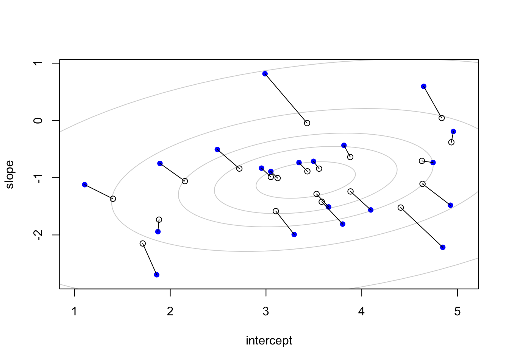
fit_plot(d10)Chain 1 Informational Message: The current Metropolis proposal is about to be rejected because of the following issue:Chain 1 Exception: lkj_corr_lpdf: Correlation matrix is not positive definite. (in '/var/folders/ky/9r71kfzx25d43wn2dtb6y_080000gp/T/Rtmplj1Apz/model-177a62ffa0d3e.stan', line 17, column 4 to column 24)Chain 1 If this warning occurs sporadically, such as for highly constrained variable types like covariance matrices, then the sampler is fine,Chain 1 but if this warning occurs often then your model may be either severely ill-conditioned or misspecified.Chain 1 Chain 1 Informational Message: The current Metropolis proposal is about to be rejected because of the following issue:Chain 1 Exception: lkj_corr_lpdf: Correlation matrix is not positive definite. (in '/var/folders/ky/9r71kfzx25d43wn2dtb6y_080000gp/T/Rtmplj1Apz/model-177a62ffa0d3e.stan', line 17, column 4 to column 24)Chain 1 If this warning occurs sporadically, such as for highly constrained variable types like covariance matrices, then the sampler is fine,Chain 1 but if this warning occurs often then your model may be either severely ill-conditioned or misspecified.Chain 1 Chain 1 Informational Message: The current Metropolis proposal is about to be rejected because of the following issue:Chain 1 Exception: lkj_corr_lpdf: Correlation matrix is not positive definite. (in '/var/folders/ky/9r71kfzx25d43wn2dtb6y_080000gp/T/Rtmplj1Apz/model-177a62ffa0d3e.stan', line 17, column 4 to column 24)Chain 1 If this warning occurs sporadically, such as for highly constrained variable types like covariance matrices, then the sampler is fine,Chain 1 but if this warning occurs often then your model may be either severely ill-conditioned or misspecified.Chain 1 Chain 1 Informational Message: The current Metropolis proposal is about to be rejected because of the following issue:Chain 1 Exception: lkj_corr_lpdf: Correlation matrix is not positive definite. (in '/var/folders/ky/9r71kfzx25d43wn2dtb6y_080000gp/T/Rtmplj1Apz/model-177a62ffa0d3e.stan', line 17, column 4 to column 24)Chain 1 If this warning occurs sporadically, such as for highly constrained variable types like covariance matrices, then the sampler is fine,Chain 1 but if this warning occurs often then your model may be either severely ill-conditioned or misspecified.Chain 1 Chain 1 Informational Message: The current Metropolis proposal is about to be rejected because of the following issue:Chain 1 Exception: lkj_corr_lpdf: Correlation matrix is not positive definite. (in '/var/folders/ky/9r71kfzx25d43wn2dtb6y_080000gp/T/Rtmplj1Apz/model-177a62ffa0d3e.stan', line 17, column 4 to column 24)Chain 1 If this warning occurs sporadically, such as for highly constrained variable types like covariance matrices, then the sampler is fine,Chain 1 but if this warning occurs often then your model may be either severely ill-conditioned or misspecified.Chain 1 Chain 2 Informational Message: The current Metropolis proposal is about to be rejected because of the following issue:Chain 2 Exception: lkj_corr_lpdf: Correlation matrix is not positive definite. (in '/var/folders/ky/9r71kfzx25d43wn2dtb6y_080000gp/T/Rtmplj1Apz/model-177a62ffa0d3e.stan', line 17, column 4 to column 24)Chain 2 If this warning occurs sporadically, such as for highly constrained variable types like covariance matrices, then the sampler is fine,Chain 2 but if this warning occurs often then your model may be either severely ill-conditioned or misspecified.Chain 2 Chain 2 Informational Message: The current Metropolis proposal is about to be rejected because of the following issue:Chain 2 Exception: lkj_corr_lpdf: Correlation matrix is not positive definite. (in '/var/folders/ky/9r71kfzx25d43wn2dtb6y_080000gp/T/Rtmplj1Apz/model-177a62ffa0d3e.stan', line 17, column 4 to column 24)Chain 2 If this warning occurs sporadically, such as for highly constrained variable types like covariance matrices, then the sampler is fine,Chain 2 but if this warning occurs often then your model may be either severely ill-conditioned or misspecified.Chain 2 Chain 2 Informational Message: The current Metropolis proposal is about to be rejected because of the following issue:Chain 2 Exception: lkj_corr_lpdf: Correlation matrix is not positive definite. (in '/var/folders/ky/9r71kfzx25d43wn2dtb6y_080000gp/T/Rtmplj1Apz/model-177a62ffa0d3e.stan', line 17, column 4 to column 24)Chain 2 If this warning occurs sporadically, such as for highly constrained variable types like covariance matrices, then the sampler is fine,Chain 2 but if this warning occurs often then your model may be either severely ill-conditioned or misspecified.Chain 2 Chain 2 Informational Message: The current Metropolis proposal is about to be rejected because of the following issue:Chain 2 Exception: lkj_corr_lpdf: Correlation matrix is not positive definite. (in '/var/folders/ky/9r71kfzx25d43wn2dtb6y_080000gp/T/Rtmplj1Apz/model-177a62ffa0d3e.stan', line 17, column 4 to column 24)Chain 2 If this warning occurs sporadically, such as for highly constrained variable types like covariance matrices, then the sampler is fine,Chain 2 but if this warning occurs often then your model may be either severely ill-conditioned or misspecified.Chain 2 Chain 2 Informational Message: The current Metropolis proposal is about to be rejected because of the following issue:Chain 2 Exception: lkj_corr_lpdf: Correlation matrix is not positive definite. (in '/var/folders/ky/9r71kfzx25d43wn2dtb6y_080000gp/T/Rtmplj1Apz/model-177a62ffa0d3e.stan', line 17, column 4 to column 24)Chain 2 If this warning occurs sporadically, such as for highly constrained variable types like covariance matrices, then the sampler is fine,Chain 2 but if this warning occurs often then your model may be either severely ill-conditioned or misspecified.Chain 2 Chain 2 Informational Message: The current Metropolis proposal is about to be rejected because of the following issue:Chain 2 Exception: lkj_corr_lpdf: Correlation matrix is not positive definite. (in '/var/folders/ky/9r71kfzx25d43wn2dtb6y_080000gp/T/Rtmplj1Apz/model-177a62ffa0d3e.stan', line 17, column 4 to column 24)Chain 2 If this warning occurs sporadically, such as for highly constrained variable types like covariance matrices, then the sampler is fine,Chain 2 but if this warning occurs often then your model may be either severely ill-conditioned or misspecified.Chain 2 Chain 2 Informational Message: The current Metropolis proposal is about to be rejected because of the following issue:Chain 2 Exception: lkj_corr_lpdf: Correlation matrix is not positive definite. (in '/var/folders/ky/9r71kfzx25d43wn2dtb6y_080000gp/T/Rtmplj1Apz/model-177a62ffa0d3e.stan', line 17, column 4 to column 24)Chain 2 If this warning occurs sporadically, such as for highly constrained variable types like covariance matrices, then the sampler is fine,Chain 2 but if this warning occurs often then your model may be either severely ill-conditioned or misspecified.Chain 2 Chain 3 Informational Message: The current Metropolis proposal is about to be rejected because of the following issue:Chain 3 Exception: lkj_corr_lpdf: Correlation matrix is not positive definite. (in '/var/folders/ky/9r71kfzx25d43wn2dtb6y_080000gp/T/Rtmplj1Apz/model-177a62ffa0d3e.stan', line 17, column 4 to column 24)Chain 3 If this warning occurs sporadically, such as for highly constrained variable types like covariance matrices, then the sampler is fine,Chain 3 but if this warning occurs often then your model may be either severely ill-conditioned or misspecified.Chain 3 Chain 4 Informational Message: The current Metropolis proposal is about to be rejected because of the following issue:Chain 4 Exception: multi_normal_lpdf: LDLT_Factor of covariance parameter is not positive definite. last conditional variance is 0. (in '/var/folders/ky/9r71kfzx25d43wn2dtb6y_080000gp/T/Rtmplj1Apz/model-177a62ffa0d3e.stan', line 27, column 4 to column 63)Chain 4 If this warning occurs sporadically, such as for highly constrained variable types like covariance matrices, then the sampler is fine,Chain 4 but if this warning occurs often then your model may be either severely ill-conditioned or misspecified.Chain 4 Warning: 22 of 2000 (1.0%) transitions ended with a divergence.
See https://mc-stan.org/misc/warnings for details.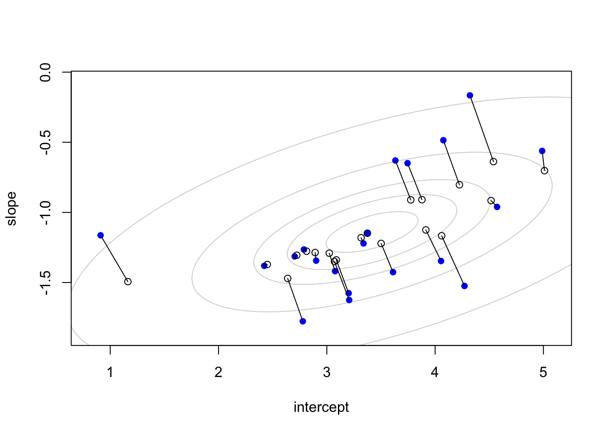
fit_plot(d20)Chain 1 Informational Message: The current Metropolis proposal is about to be rejected because of the following issue:Chain 1 Exception: lkj_corr_lpdf: Correlation matrix is not positive definite. (in '/var/folders/ky/9r71kfzx25d43wn2dtb6y_080000gp/T/Rtmplj1Apz/model-177a670df8f41.stan', line 17, column 4 to column 24)Chain 1 If this warning occurs sporadically, such as for highly constrained variable types like covariance matrices, then the sampler is fine,Chain 1 but if this warning occurs often then your model may be either severely ill-conditioned or misspecified.Chain 1 Chain 1 Informational Message: The current Metropolis proposal is about to be rejected because of the following issue:Chain 1 Exception: lkj_corr_lpdf: Correlation matrix is not positive definite. (in '/var/folders/ky/9r71kfzx25d43wn2dtb6y_080000gp/T/Rtmplj1Apz/model-177a670df8f41.stan', line 17, column 4 to column 24)Chain 1 If this warning occurs sporadically, such as for highly constrained variable types like covariance matrices, then the sampler is fine,Chain 1 but if this warning occurs often then your model may be either severely ill-conditioned or misspecified.Chain 1 Chain 1 Informational Message: The current Metropolis proposal is about to be rejected because of the following issue:Chain 1 Exception: lkj_corr_lpdf: Correlation matrix is not positive definite. (in '/var/folders/ky/9r71kfzx25d43wn2dtb6y_080000gp/T/Rtmplj1Apz/model-177a670df8f41.stan', line 17, column 4 to column 24)Chain 1 If this warning occurs sporadically, such as for highly constrained variable types like covariance matrices, then the sampler is fine,Chain 1 but if this warning occurs often then your model may be either severely ill-conditioned or misspecified.Chain 1 Chain 1 Informational Message: The current Metropolis proposal is about to be rejected because of the following issue:Chain 1 Exception: multi_normal_lpdf: Covariance matrix is not symmetric. Covariance matrix[1,2] = -1.86331e+09, but Covariance matrix[2,1] = -1.86331e+09 (in '/var/folders/ky/9r71kfzx25d43wn2dtb6y_080000gp/T/Rtmplj1Apz/model-177a670df8f41.stan', line 27, column 4 to column 63)Chain 1 If this warning occurs sporadically, such as for highly constrained variable types like covariance matrices, then the sampler is fine,Chain 1 but if this warning occurs often then your model may be either severely ill-conditioned or misspecified.Chain 1 Chain 1 Informational Message: The current Metropolis proposal is about to be rejected because of the following issue:Chain 1 Exception: lkj_corr_lpdf: Correlation matrix is not positive definite. (in '/var/folders/ky/9r71kfzx25d43wn2dtb6y_080000gp/T/Rtmplj1Apz/model-177a670df8f41.stan', line 17, column 4 to column 24)Chain 1 If this warning occurs sporadically, such as for highly constrained variable types like covariance matrices, then the sampler is fine,Chain 1 but if this warning occurs often then your model may be either severely ill-conditioned or misspecified.Chain 1 Chain 1 Informational Message: The current Metropolis proposal is about to be rejected because of the following issue:Chain 1 Exception: lkj_corr_lpdf: Correlation matrix is not positive definite. (in '/var/folders/ky/9r71kfzx25d43wn2dtb6y_080000gp/T/Rtmplj1Apz/model-177a670df8f41.stan', line 17, column 4 to column 24)Chain 1 If this warning occurs sporadically, such as for highly constrained variable types like covariance matrices, then the sampler is fine,Chain 1 but if this warning occurs often then your model may be either severely ill-conditioned or misspecified.Chain 1 Chain 2 Informational Message: The current Metropolis proposal is about to be rejected because of the following issue:Chain 2 Exception: lkj_corr_lpdf: Correlation matrix is not positive definite. (in '/var/folders/ky/9r71kfzx25d43wn2dtb6y_080000gp/T/Rtmplj1Apz/model-177a670df8f41.stan', line 17, column 4 to column 24)Chain 2 If this warning occurs sporadically, such as for highly constrained variable types like covariance matrices, then the sampler is fine,Chain 2 but if this warning occurs often then your model may be either severely ill-conditioned or misspecified.Chain 2 Chain 2 Informational Message: The current Metropolis proposal is about to be rejected because of the following issue:Chain 2 Exception: lkj_corr_lpdf: Correlation matrix is not positive definite. (in '/var/folders/ky/9r71kfzx25d43wn2dtb6y_080000gp/T/Rtmplj1Apz/model-177a670df8f41.stan', line 17, column 4 to column 24)Chain 2 If this warning occurs sporadically, such as for highly constrained variable types like covariance matrices, then the sampler is fine,Chain 2 but if this warning occurs often then your model may be either severely ill-conditioned or misspecified.Chain 2 Chain 2 Informational Message: The current Metropolis proposal is about to be rejected because of the following issue:Chain 2 Exception: lkj_corr_lpdf: Correlation matrix is not positive definite. (in '/var/folders/ky/9r71kfzx25d43wn2dtb6y_080000gp/T/Rtmplj1Apz/model-177a670df8f41.stan', line 17, column 4 to column 24)Chain 2 If this warning occurs sporadically, such as for highly constrained variable types like covariance matrices, then the sampler is fine,Chain 2 but if this warning occurs often then your model may be either severely ill-conditioned or misspecified.Chain 2 Chain 2 Informational Message: The current Metropolis proposal is about to be rejected because of the following issue:Chain 2 Exception: lkj_corr_lpdf: Correlation matrix is not positive definite. (in '/var/folders/ky/9r71kfzx25d43wn2dtb6y_080000gp/T/Rtmplj1Apz/model-177a670df8f41.stan', line 17, column 4 to column 24)Chain 2 If this warning occurs sporadically, such as for highly constrained variable types like covariance matrices, then the sampler is fine,Chain 2 but if this warning occurs often then your model may be either severely ill-conditioned or misspecified.Chain 2 Chain 2 Informational Message: The current Metropolis proposal is about to be rejected because of the following issue:Chain 2 Exception: lkj_corr_lpdf: Correlation matrix is not positive definite. (in '/var/folders/ky/9r71kfzx25d43wn2dtb6y_080000gp/T/Rtmplj1Apz/model-177a670df8f41.stan', line 17, column 4 to column 24)Chain 2 If this warning occurs sporadically, such as for highly constrained variable types like covariance matrices, then the sampler is fine,Chain 2 but if this warning occurs often then your model may be either severely ill-conditioned or misspecified.Chain 2 Chain 2 Informational Message: The current Metropolis proposal is about to be rejected because of the following issue:Chain 2 Exception: lkj_corr_lpdf: Correlation matrix is not positive definite. (in '/var/folders/ky/9r71kfzx25d43wn2dtb6y_080000gp/T/Rtmplj1Apz/model-177a670df8f41.stan', line 17, column 4 to column 24)Chain 2 If this warning occurs sporadically, such as for highly constrained variable types like covariance matrices, then the sampler is fine,Chain 2 but if this warning occurs often then your model may be either severely ill-conditioned or misspecified.Chain 2 Chain 2 Informational Message: The current Metropolis proposal is about to be rejected because of the following issue:Chain 2 Exception: lkj_corr_lpdf: Correlation matrix is not positive definite. (in '/var/folders/ky/9r71kfzx25d43wn2dtb6y_080000gp/T/Rtmplj1Apz/model-177a670df8f41.stan', line 17, column 4 to column 24)Chain 2 If this warning occurs sporadically, such as for highly constrained variable types like covariance matrices, then the sampler is fine,Chain 2 but if this warning occurs often then your model may be either severely ill-conditioned or misspecified.Chain 2 Chain 3 Informational Message: The current Metropolis proposal is about to be rejected because of the following issue:Chain 3 Exception: lkj_corr_lpdf: Correlation matrix is not positive definite. (in '/var/folders/ky/9r71kfzx25d43wn2dtb6y_080000gp/T/Rtmplj1Apz/model-177a670df8f41.stan', line 17, column 4 to column 24)Chain 3 If this warning occurs sporadically, such as for highly constrained variable types like covariance matrices, then the sampler is fine,Chain 3 but if this warning occurs often then your model may be either severely ill-conditioned or misspecified.Chain 3 Chain 3 Informational Message: The current Metropolis proposal is about to be rejected because of the following issue:Chain 3 Exception: lkj_corr_lpdf: Correlation matrix is not positive definite. (in '/var/folders/ky/9r71kfzx25d43wn2dtb6y_080000gp/T/Rtmplj1Apz/model-177a670df8f41.stan', line 17, column 4 to column 24)Chain 3 If this warning occurs sporadically, such as for highly constrained variable types like covariance matrices, then the sampler is fine,Chain 3 but if this warning occurs often then your model may be either severely ill-conditioned or misspecified.Chain 3 Chain 3 Informational Message: The current Metropolis proposal is about to be rejected because of the following issue:Chain 3 Exception: lkj_corr_lpdf: Correlation matrix is not positive definite. (in '/var/folders/ky/9r71kfzx25d43wn2dtb6y_080000gp/T/Rtmplj1Apz/model-177a670df8f41.stan', line 17, column 4 to column 24)Chain 3 If this warning occurs sporadically, such as for highly constrained variable types like covariance matrices, then the sampler is fine,Chain 3 but if this warning occurs often then your model may be either severely ill-conditioned or misspecified.Chain 3 Chain 3 Informational Message: The current Metropolis proposal is about to be rejected because of the following issue:Chain 3 Exception: lkj_corr_lpdf: Correlation matrix is not positive definite. (in '/var/folders/ky/9r71kfzx25d43wn2dtb6y_080000gp/T/Rtmplj1Apz/model-177a670df8f41.stan', line 17, column 4 to column 24)Chain 3 If this warning occurs sporadically, such as for highly constrained variable types like covariance matrices, then the sampler is fine,Chain 3 but if this warning occurs often then your model may be either severely ill-conditioned or misspecified.Chain 3 Chain 3 Informational Message: The current Metropolis proposal is about to be rejected because of the following issue:Chain 3 Exception: lkj_corr_lpdf: Correlation matrix is not positive definite. (in '/var/folders/ky/9r71kfzx25d43wn2dtb6y_080000gp/T/Rtmplj1Apz/model-177a670df8f41.stan', line 17, column 4 to column 24)Chain 3 If this warning occurs sporadically, such as for highly constrained variable types like covariance matrices, then the sampler is fine,Chain 3 but if this warning occurs often then your model may be either severely ill-conditioned or misspecified.Chain 3 Chain 3 Informational Message: The current Metropolis proposal is about to be rejected because of the following issue:Chain 3 Exception: lkj_corr_lpdf: Correlation matrix is not positive definite. (in '/var/folders/ky/9r71kfzx25d43wn2dtb6y_080000gp/T/Rtmplj1Apz/model-177a670df8f41.stan', line 17, column 4 to column 24)Chain 3 If this warning occurs sporadically, such as for highly constrained variable types like covariance matrices, then the sampler is fine,Chain 3 but if this warning occurs often then your model may be either severely ill-conditioned or misspecified.Chain 3 Chain 3 Informational Message: The current Metropolis proposal is about to be rejected because of the following issue:Chain 3 Exception: lkj_corr_lpdf: Correlation matrix is not positive definite. (in '/var/folders/ky/9r71kfzx25d43wn2dtb6y_080000gp/T/Rtmplj1Apz/model-177a670df8f41.stan', line 17, column 4 to column 24)Chain 3 If this warning occurs sporadically, such as for highly constrained variable types like covariance matrices, then the sampler is fine,Chain 3 but if this warning occurs often then your model may be either severely ill-conditioned or misspecified.Chain 3 Chain 4 Informational Message: The current Metropolis proposal is about to be rejected because of the following issue:Chain 4 Exception: lkj_corr_lpdf: Correlation matrix is not positive definite. (in '/var/folders/ky/9r71kfzx25d43wn2dtb6y_080000gp/T/Rtmplj1Apz/model-177a670df8f41.stan', line 17, column 4 to column 24)Chain 4 If this warning occurs sporadically, such as for highly constrained variable types like covariance matrices, then the sampler is fine,Chain 4 but if this warning occurs often then your model may be either severely ill-conditioned or misspecified.Chain 4 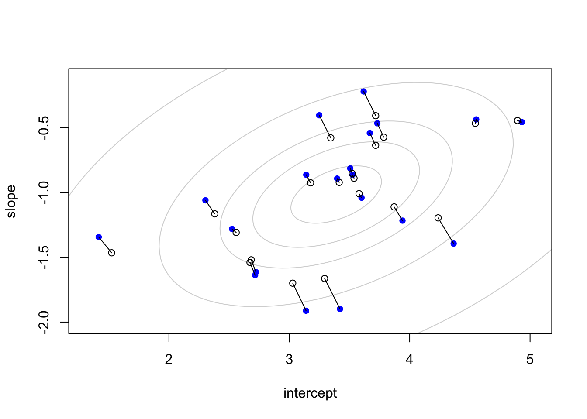
fit_plot(d50)Chain 1 Informational Message: The current Metropolis proposal is about to be rejected because of the following issue:Chain 1 Exception: lkj_corr_lpdf: Correlation matrix is not positive definite. (in '/var/folders/ky/9r71kfzx25d43wn2dtb6y_080000gp/T/Rtmplj1Apz/model-177a67cfef80b.stan', line 17, column 4 to column 24)Chain 1 If this warning occurs sporadically, such as for highly constrained variable types like covariance matrices, then the sampler is fine,Chain 1 but if this warning occurs often then your model may be either severely ill-conditioned or misspecified.Chain 1 Chain 1 Informational Message: The current Metropolis proposal is about to be rejected because of the following issue:Chain 1 Exception: lkj_corr_lpdf: Correlation matrix is not positive definite. (in '/var/folders/ky/9r71kfzx25d43wn2dtb6y_080000gp/T/Rtmplj1Apz/model-177a67cfef80b.stan', line 17, column 4 to column 24)Chain 1 If this warning occurs sporadically, such as for highly constrained variable types like covariance matrices, then the sampler is fine,Chain 1 but if this warning occurs often then your model may be either severely ill-conditioned or misspecified.Chain 1 Chain 1 Informational Message: The current Metropolis proposal is about to be rejected because of the following issue:Chain 1 Exception: lkj_corr_lpdf: Correlation matrix is not positive definite. (in '/var/folders/ky/9r71kfzx25d43wn2dtb6y_080000gp/T/Rtmplj1Apz/model-177a67cfef80b.stan', line 17, column 4 to column 24)Chain 1 If this warning occurs sporadically, such as for highly constrained variable types like covariance matrices, then the sampler is fine,Chain 1 but if this warning occurs often then your model may be either severely ill-conditioned or misspecified.Chain 1 Chain 1 Informational Message: The current Metropolis proposal is about to be rejected because of the following issue:Chain 1 Exception: lkj_corr_lpdf: Correlation matrix is not positive definite. (in '/var/folders/ky/9r71kfzx25d43wn2dtb6y_080000gp/T/Rtmplj1Apz/model-177a67cfef80b.stan', line 17, column 4 to column 24)Chain 1 If this warning occurs sporadically, such as for highly constrained variable types like covariance matrices, then the sampler is fine,Chain 1 but if this warning occurs often then your model may be either severely ill-conditioned or misspecified.Chain 1 Chain 1 Informational Message: The current Metropolis proposal is about to be rejected because of the following issue:Chain 1 Exception: lkj_corr_lpdf: Correlation matrix is not positive definite. (in '/var/folders/ky/9r71kfzx25d43wn2dtb6y_080000gp/T/Rtmplj1Apz/model-177a67cfef80b.stan', line 17, column 4 to column 24)Chain 1 If this warning occurs sporadically, such as for highly constrained variable types like covariance matrices, then the sampler is fine,Chain 1 but if this warning occurs often then your model may be either severely ill-conditioned or misspecified.Chain 1 Chain 1 Informational Message: The current Metropolis proposal is about to be rejected because of the following issue:Chain 1 Exception: lkj_corr_lpdf: Correlation matrix is not positive definite. (in '/var/folders/ky/9r71kfzx25d43wn2dtb6y_080000gp/T/Rtmplj1Apz/model-177a67cfef80b.stan', line 17, column 4 to column 24)Chain 1 If this warning occurs sporadically, such as for highly constrained variable types like covariance matrices, then the sampler is fine,Chain 1 but if this warning occurs often then your model may be either severely ill-conditioned or misspecified.Chain 1 Chain 1 Informational Message: The current Metropolis proposal is about to be rejected because of the following issue:Chain 1 Exception: lkj_corr_lpdf: Correlation matrix is not positive definite. (in '/var/folders/ky/9r71kfzx25d43wn2dtb6y_080000gp/T/Rtmplj1Apz/model-177a67cfef80b.stan', line 17, column 4 to column 24)Chain 1 If this warning occurs sporadically, such as for highly constrained variable types like covariance matrices, then the sampler is fine,Chain 1 but if this warning occurs often then your model may be either severely ill-conditioned or misspecified.Chain 1 Chain 1 Informational Message: The current Metropolis proposal is about to be rejected because of the following issue:Chain 1 Exception: lkj_corr_lpdf: Correlation matrix is not positive definite. (in '/var/folders/ky/9r71kfzx25d43wn2dtb6y_080000gp/T/Rtmplj1Apz/model-177a67cfef80b.stan', line 17, column 4 to column 24)Chain 1 If this warning occurs sporadically, such as for highly constrained variable types like covariance matrices, then the sampler is fine,Chain 1 but if this warning occurs often then your model may be either severely ill-conditioned or misspecified.Chain 1 Chain 1 Informational Message: The current Metropolis proposal is about to be rejected because of the following issue:Chain 1 Exception: lkj_corr_lpdf: Correlation matrix is not positive definite. (in '/var/folders/ky/9r71kfzx25d43wn2dtb6y_080000gp/T/Rtmplj1Apz/model-177a67cfef80b.stan', line 17, column 4 to column 24)Chain 1 If this warning occurs sporadically, such as for highly constrained variable types like covariance matrices, then the sampler is fine,Chain 1 but if this warning occurs often then your model may be either severely ill-conditioned or misspecified.Chain 1 Chain 1 Informational Message: The current Metropolis proposal is about to be rejected because of the following issue:Chain 1 Exception: lkj_corr_lpdf: Correlation matrix is not positive definite. (in '/var/folders/ky/9r71kfzx25d43wn2dtb6y_080000gp/T/Rtmplj1Apz/model-177a67cfef80b.stan', line 17, column 4 to column 24)Chain 1 If this warning occurs sporadically, such as for highly constrained variable types like covariance matrices, then the sampler is fine,Chain 1 but if this warning occurs often then your model may be either severely ill-conditioned or misspecified.Chain 1 Chain 2 Informational Message: The current Metropolis proposal is about to be rejected because of the following issue:Chain 2 Exception: lkj_corr_lpdf: Correlation matrix is not positive definite. (in '/var/folders/ky/9r71kfzx25d43wn2dtb6y_080000gp/T/Rtmplj1Apz/model-177a67cfef80b.stan', line 17, column 4 to column 24)Chain 2 If this warning occurs sporadically, such as for highly constrained variable types like covariance matrices, then the sampler is fine,Chain 2 but if this warning occurs often then your model may be either severely ill-conditioned or misspecified.Chain 2 Chain 2 Informational Message: The current Metropolis proposal is about to be rejected because of the following issue:Chain 2 Exception: lkj_corr_lpdf: Correlation matrix is not positive definite. (in '/var/folders/ky/9r71kfzx25d43wn2dtb6y_080000gp/T/Rtmplj1Apz/model-177a67cfef80b.stan', line 17, column 4 to column 24)Chain 2 If this warning occurs sporadically, such as for highly constrained variable types like covariance matrices, then the sampler is fine,Chain 2 but if this warning occurs often then your model may be either severely ill-conditioned or misspecified.Chain 2 Chain 2 Informational Message: The current Metropolis proposal is about to be rejected because of the following issue:Chain 2 Exception: lkj_corr_lpdf: Correlation matrix is not positive definite. (in '/var/folders/ky/9r71kfzx25d43wn2dtb6y_080000gp/T/Rtmplj1Apz/model-177a67cfef80b.stan', line 17, column 4 to column 24)Chain 2 If this warning occurs sporadically, such as for highly constrained variable types like covariance matrices, then the sampler is fine,Chain 2 but if this warning occurs often then your model may be either severely ill-conditioned or misspecified.Chain 2 Chain 2 Informational Message: The current Metropolis proposal is about to be rejected because of the following issue:Chain 2 Exception: lkj_corr_lpdf: Correlation matrix is not positive definite. (in '/var/folders/ky/9r71kfzx25d43wn2dtb6y_080000gp/T/Rtmplj1Apz/model-177a67cfef80b.stan', line 17, column 4 to column 24)Chain 2 If this warning occurs sporadically, such as for highly constrained variable types like covariance matrices, then the sampler is fine,Chain 2 but if this warning occurs often then your model may be either severely ill-conditioned or misspecified.Chain 2 Chain 2 Informational Message: The current Metropolis proposal is about to be rejected because of the following issue:Chain 2 Exception: lkj_corr_lpdf: Correlation matrix is not positive definite. (in '/var/folders/ky/9r71kfzx25d43wn2dtb6y_080000gp/T/Rtmplj1Apz/model-177a67cfef80b.stan', line 17, column 4 to column 24)Chain 2 If this warning occurs sporadically, such as for highly constrained variable types like covariance matrices, then the sampler is fine,Chain 2 but if this warning occurs often then your model may be either severely ill-conditioned or misspecified.Chain 2 Chain 2 Informational Message: The current Metropolis proposal is about to be rejected because of the following issue:Chain 2 Exception: lkj_corr_lpdf: Correlation matrix is not positive definite. (in '/var/folders/ky/9r71kfzx25d43wn2dtb6y_080000gp/T/Rtmplj1Apz/model-177a67cfef80b.stan', line 17, column 4 to column 24)Chain 2 If this warning occurs sporadically, such as for highly constrained variable types like covariance matrices, then the sampler is fine,Chain 2 but if this warning occurs often then your model may be either severely ill-conditioned or misspecified.Chain 2 Chain 3 Informational Message: The current Metropolis proposal is about to be rejected because of the following issue:Chain 3 Exception: lkj_corr_lpdf: Correlation matrix is not positive definite. (in '/var/folders/ky/9r71kfzx25d43wn2dtb6y_080000gp/T/Rtmplj1Apz/model-177a67cfef80b.stan', line 17, column 4 to column 24)Chain 3 If this warning occurs sporadically, such as for highly constrained variable types like covariance matrices, then the sampler is fine,Chain 3 but if this warning occurs often then your model may be either severely ill-conditioned or misspecified.Chain 3 Chain 3 Informational Message: The current Metropolis proposal is about to be rejected because of the following issue:Chain 3 Exception: lkj_corr_lpdf: Correlation matrix is not positive definite. (in '/var/folders/ky/9r71kfzx25d43wn2dtb6y_080000gp/T/Rtmplj1Apz/model-177a67cfef80b.stan', line 17, column 4 to column 24)Chain 3 If this warning occurs sporadically, such as for highly constrained variable types like covariance matrices, then the sampler is fine,Chain 3 but if this warning occurs often then your model may be either severely ill-conditioned or misspecified.Chain 3 Chain 3 Informational Message: The current Metropolis proposal is about to be rejected because of the following issue:Chain 3 Exception: lkj_corr_lpdf: Correlation matrix is not positive definite. (in '/var/folders/ky/9r71kfzx25d43wn2dtb6y_080000gp/T/Rtmplj1Apz/model-177a67cfef80b.stan', line 17, column 4 to column 24)Chain 3 If this warning occurs sporadically, such as for highly constrained variable types like covariance matrices, then the sampler is fine,Chain 3 but if this warning occurs often then your model may be either severely ill-conditioned or misspecified.Chain 3 Chain 3 Informational Message: The current Metropolis proposal is about to be rejected because of the following issue:Chain 3 Exception: multi_normal_lpdf: Covariance matrix is not symmetric. Covariance matrix[1,2] = -1.82954e+28, but Covariance matrix[2,1] = -1.82954e+28 (in '/var/folders/ky/9r71kfzx25d43wn2dtb6y_080000gp/T/Rtmplj1Apz/model-177a67cfef80b.stan', line 27, column 4 to column 63)Chain 3 If this warning occurs sporadically, such as for highly constrained variable types like covariance matrices, then the sampler is fine,Chain 3 but if this warning occurs often then your model may be either severely ill-conditioned or misspecified.Chain 3 Chain 3 Informational Message: The current Metropolis proposal is about to be rejected because of the following issue:Chain 3 Exception: lkj_corr_lpdf: Correlation matrix is not positive definite. (in '/var/folders/ky/9r71kfzx25d43wn2dtb6y_080000gp/T/Rtmplj1Apz/model-177a67cfef80b.stan', line 17, column 4 to column 24)Chain 3 If this warning occurs sporadically, such as for highly constrained variable types like covariance matrices, then the sampler is fine,Chain 3 but if this warning occurs often then your model may be either severely ill-conditioned or misspecified.Chain 3 Chain 3 Informational Message: The current Metropolis proposal is about to be rejected because of the following issue:Chain 3 Exception: lkj_corr_lpdf: Correlation matrix is not positive definite. (in '/var/folders/ky/9r71kfzx25d43wn2dtb6y_080000gp/T/Rtmplj1Apz/model-177a67cfef80b.stan', line 17, column 4 to column 24)Chain 3 If this warning occurs sporadically, such as for highly constrained variable types like covariance matrices, then the sampler is fine,Chain 3 but if this warning occurs often then your model may be either severely ill-conditioned or misspecified.Chain 3 Chain 4 Informational Message: The current Metropolis proposal is about to be rejected because of the following issue:Chain 4 Exception: lkj_corr_lpdf: Correlation matrix is not positive definite. (in '/var/folders/ky/9r71kfzx25d43wn2dtb6y_080000gp/T/Rtmplj1Apz/model-177a67cfef80b.stan', line 17, column 4 to column 24)Chain 4 If this warning occurs sporadically, such as for highly constrained variable types like covariance matrices, then the sampler is fine,Chain 4 but if this warning occurs often then your model may be either severely ill-conditioned or misspecified.Chain 4 Chain 4 Informational Message: The current Metropolis proposal is about to be rejected because of the following issue:Chain 4 Exception: lkj_corr_lpdf: Correlation matrix is not positive definite. (in '/var/folders/ky/9r71kfzx25d43wn2dtb6y_080000gp/T/Rtmplj1Apz/model-177a67cfef80b.stan', line 17, column 4 to column 24)Chain 4 If this warning occurs sporadically, such as for highly constrained variable types like covariance matrices, then the sampler is fine,Chain 4 but if this warning occurs often then your model may be either severely ill-conditioned or misspecified.Chain 4 Chain 4 Informational Message: The current Metropolis proposal is about to be rejected because of the following issue:Chain 4 Exception: lkj_corr_lpdf: Correlation matrix is not positive definite. (in '/var/folders/ky/9r71kfzx25d43wn2dtb6y_080000gp/T/Rtmplj1Apz/model-177a67cfef80b.stan', line 17, column 4 to column 24)Chain 4 If this warning occurs sporadically, such as for highly constrained variable types like covariance matrices, then the sampler is fine,Chain 4 but if this warning occurs often then your model may be either severely ill-conditioned or misspecified.Chain 4 Chain 4 Informational Message: The current Metropolis proposal is about to be rejected because of the following issue:Chain 4 Exception: lkj_corr_lpdf: Correlation matrix is not positive definite. (in '/var/folders/ky/9r71kfzx25d43wn2dtb6y_080000gp/T/Rtmplj1Apz/model-177a67cfef80b.stan', line 17, column 4 to column 24)Chain 4 If this warning occurs sporadically, such as for highly constrained variable types like covariance matrices, then the sampler is fine,Chain 4 but if this warning occurs often then your model may be either severely ill-conditioned or misspecified.Chain 4 Chain 4 Informational Message: The current Metropolis proposal is about to be rejected because of the following issue:Chain 4 Exception: lkj_corr_lpdf: Correlation matrix is not positive definite. (in '/var/folders/ky/9r71kfzx25d43wn2dtb6y_080000gp/T/Rtmplj1Apz/model-177a67cfef80b.stan', line 17, column 4 to column 24)Chain 4 If this warning occurs sporadically, such as for highly constrained variable types like covariance matrices, then the sampler is fine,Chain 4 but if this warning occurs often then your model may be either severely ill-conditioned or misspecified.Chain 4 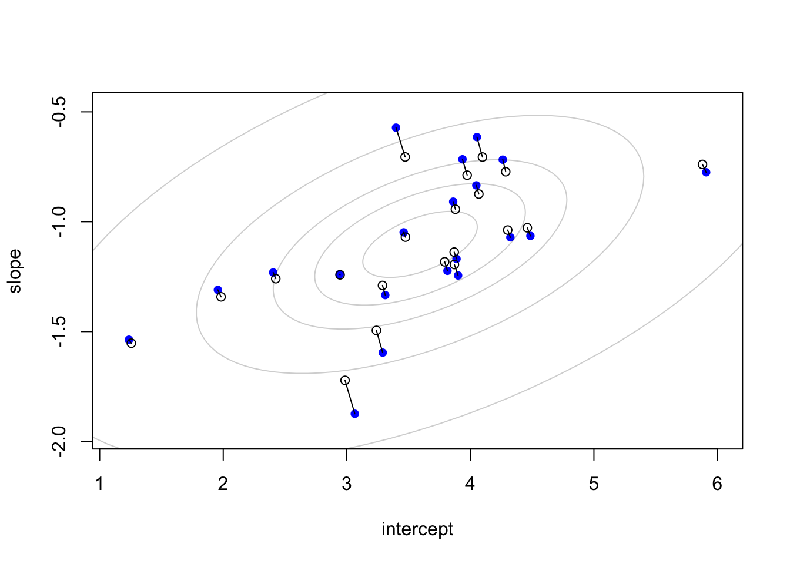
fit_plot(d100)Chain 1 Informational Message: The current Metropolis proposal is about to be rejected because of the following issue:Chain 1 Exception: lkj_corr_lpdf: Correlation matrix is not positive definite. (in '/var/folders/ky/9r71kfzx25d43wn2dtb6y_080000gp/T/Rtmplj1Apz/model-177a62dafd3ba.stan', line 17, column 4 to column 24)Chain 1 If this warning occurs sporadically, such as for highly constrained variable types like covariance matrices, then the sampler is fine,Chain 1 but if this warning occurs often then your model may be either severely ill-conditioned or misspecified.Chain 1 Chain 1 Informational Message: The current Metropolis proposal is about to be rejected because of the following issue:Chain 1 Exception: lkj_corr_lpdf: Correlation matrix is not positive definite. (in '/var/folders/ky/9r71kfzx25d43wn2dtb6y_080000gp/T/Rtmplj1Apz/model-177a62dafd3ba.stan', line 17, column 4 to column 24)Chain 1 If this warning occurs sporadically, such as for highly constrained variable types like covariance matrices, then the sampler is fine,Chain 1 but if this warning occurs often then your model may be either severely ill-conditioned or misspecified.Chain 1 Chain 1 Informational Message: The current Metropolis proposal is about to be rejected because of the following issue:Chain 1 Exception: multi_normal_lpdf: Covariance matrix is not symmetric. Covariance matrix[1,2] = -5.77051e+18, but Covariance matrix[2,1] = -5.77051e+18 (in '/var/folders/ky/9r71kfzx25d43wn2dtb6y_080000gp/T/Rtmplj1Apz/model-177a62dafd3ba.stan', line 27, column 4 to column 63)Chain 1 If this warning occurs sporadically, such as for highly constrained variable types like covariance matrices, then the sampler is fine,Chain 1 but if this warning occurs often then your model may be either severely ill-conditioned or misspecified.Chain 1 Chain 1 Informational Message: The current Metropolis proposal is about to be rejected because of the following issue:Chain 1 Exception: lkj_corr_lpdf: Correlation matrix is not positive definite. (in '/var/folders/ky/9r71kfzx25d43wn2dtb6y_080000gp/T/Rtmplj1Apz/model-177a62dafd3ba.stan', line 17, column 4 to column 24)Chain 1 If this warning occurs sporadically, such as for highly constrained variable types like covariance matrices, then the sampler is fine,Chain 1 but if this warning occurs often then your model may be either severely ill-conditioned or misspecified.Chain 1 Chain 1 Informational Message: The current Metropolis proposal is about to be rejected because of the following issue:Chain 1 Exception: lkj_corr_lpdf: Correlation matrix is not positive definite. (in '/var/folders/ky/9r71kfzx25d43wn2dtb6y_080000gp/T/Rtmplj1Apz/model-177a62dafd3ba.stan', line 17, column 4 to column 24)Chain 1 If this warning occurs sporadically, such as for highly constrained variable types like covariance matrices, then the sampler is fine,Chain 1 but if this warning occurs often then your model may be either severely ill-conditioned or misspecified.Chain 1 Chain 2 Informational Message: The current Metropolis proposal is about to be rejected because of the following issue:Chain 2 Exception: lkj_corr_lpdf: Correlation matrix is not positive definite. (in '/var/folders/ky/9r71kfzx25d43wn2dtb6y_080000gp/T/Rtmplj1Apz/model-177a62dafd3ba.stan', line 17, column 4 to column 24)Chain 2 If this warning occurs sporadically, such as for highly constrained variable types like covariance matrices, then the sampler is fine,Chain 2 but if this warning occurs often then your model may be either severely ill-conditioned or misspecified.Chain 2 Chain 2 Informational Message: The current Metropolis proposal is about to be rejected because of the following issue:Chain 2 Exception: lkj_corr_lpdf: Correlation matrix is not positive definite. (in '/var/folders/ky/9r71kfzx25d43wn2dtb6y_080000gp/T/Rtmplj1Apz/model-177a62dafd3ba.stan', line 17, column 4 to column 24)Chain 2 If this warning occurs sporadically, such as for highly constrained variable types like covariance matrices, then the sampler is fine,Chain 2 but if this warning occurs often then your model may be either severely ill-conditioned or misspecified.Chain 2 Chain 2 Informational Message: The current Metropolis proposal is about to be rejected because of the following issue:Chain 2 Exception: lkj_corr_lpdf: Correlation matrix is not positive definite. (in '/var/folders/ky/9r71kfzx25d43wn2dtb6y_080000gp/T/Rtmplj1Apz/model-177a62dafd3ba.stan', line 17, column 4 to column 24)Chain 2 If this warning occurs sporadically, such as for highly constrained variable types like covariance matrices, then the sampler is fine,Chain 2 but if this warning occurs often then your model may be either severely ill-conditioned or misspecified.Chain 2 Chain 3 Informational Message: The current Metropolis proposal is about to be rejected because of the following issue:Chain 3 Exception: lkj_corr_lpdf: Correlation matrix is not positive definite. (in '/var/folders/ky/9r71kfzx25d43wn2dtb6y_080000gp/T/Rtmplj1Apz/model-177a62dafd3ba.stan', line 17, column 4 to column 24)Chain 3 If this warning occurs sporadically, such as for highly constrained variable types like covariance matrices, then the sampler is fine,Chain 3 but if this warning occurs often then your model may be either severely ill-conditioned or misspecified.Chain 3 Chain 3 Informational Message: The current Metropolis proposal is about to be rejected because of the following issue:Chain 3 Exception: lkj_corr_lpdf: Correlation matrix is not positive definite. (in '/var/folders/ky/9r71kfzx25d43wn2dtb6y_080000gp/T/Rtmplj1Apz/model-177a62dafd3ba.stan', line 17, column 4 to column 24)Chain 3 If this warning occurs sporadically, such as for highly constrained variable types like covariance matrices, then the sampler is fine,Chain 3 but if this warning occurs often then your model may be either severely ill-conditioned or misspecified.Chain 3 Chain 3 Informational Message: The current Metropolis proposal is about to be rejected because of the following issue:Chain 3 Exception: lkj_corr_lpdf: Correlation matrix is not positive definite. (in '/var/folders/ky/9r71kfzx25d43wn2dtb6y_080000gp/T/Rtmplj1Apz/model-177a62dafd3ba.stan', line 17, column 4 to column 24)Chain 3 If this warning occurs sporadically, such as for highly constrained variable types like covariance matrices, then the sampler is fine,Chain 3 but if this warning occurs often then your model may be either severely ill-conditioned or misspecified.Chain 3 Chain 3 Informational Message: The current Metropolis proposal is about to be rejected because of the following issue:Chain 3 Exception: lkj_corr_lpdf: Correlation matrix is not positive definite. (in '/var/folders/ky/9r71kfzx25d43wn2dtb6y_080000gp/T/Rtmplj1Apz/model-177a62dafd3ba.stan', line 17, column 4 to column 24)Chain 3 If this warning occurs sporadically, such as for highly constrained variable types like covariance matrices, then the sampler is fine,Chain 3 but if this warning occurs often then your model may be either severely ill-conditioned or misspecified.Chain 3 Chain 3 Informational Message: The current Metropolis proposal is about to be rejected because of the following issue:Chain 3 Exception: lkj_corr_lpdf: Correlation matrix is not positive definite. (in '/var/folders/ky/9r71kfzx25d43wn2dtb6y_080000gp/T/Rtmplj1Apz/model-177a62dafd3ba.stan', line 17, column 4 to column 24)Chain 3 If this warning occurs sporadically, such as for highly constrained variable types like covariance matrices, then the sampler is fine,Chain 3 but if this warning occurs often then your model may be either severely ill-conditioned or misspecified.Chain 3 Chain 3 Informational Message: The current Metropolis proposal is about to be rejected because of the following issue:Chain 3 Exception: lkj_corr_lpdf: Correlation matrix is not positive definite. (in '/var/folders/ky/9r71kfzx25d43wn2dtb6y_080000gp/T/Rtmplj1Apz/model-177a62dafd3ba.stan', line 17, column 4 to column 24)Chain 3 If this warning occurs sporadically, such as for highly constrained variable types like covariance matrices, then the sampler is fine,Chain 3 but if this warning occurs often then your model may be either severely ill-conditioned or misspecified.Chain 3 Chain 4 Informational Message: The current Metropolis proposal is about to be rejected because of the following issue:Chain 4 Exception: lkj_corr_lpdf: Correlation matrix is not positive definite. (in '/var/folders/ky/9r71kfzx25d43wn2dtb6y_080000gp/T/Rtmplj1Apz/model-177a62dafd3ba.stan', line 17, column 4 to column 24)Chain 4 If this warning occurs sporadically, such as for highly constrained variable types like covariance matrices, then the sampler is fine,Chain 4 but if this warning occurs often then your model may be either severely ill-conditioned or misspecified.Chain 4 Chain 4 Informational Message: The current Metropolis proposal is about to be rejected because of the following issue:Chain 4 Exception: lkj_corr_lpdf: Correlation matrix is not positive definite. (in '/var/folders/ky/9r71kfzx25d43wn2dtb6y_080000gp/T/Rtmplj1Apz/model-177a62dafd3ba.stan', line 17, column 4 to column 24)Chain 4 If this warning occurs sporadically, such as for highly constrained variable types like covariance matrices, then the sampler is fine,Chain 4 but if this warning occurs often then your model may be either severely ill-conditioned or misspecified.Chain 4 Chain 4 Informational Message: The current Metropolis proposal is about to be rejected because of the following issue:Chain 4 Exception: lkj_corr_lpdf: Correlation matrix is not positive definite. (in '/var/folders/ky/9r71kfzx25d43wn2dtb6y_080000gp/T/Rtmplj1Apz/model-177a62dafd3ba.stan', line 17, column 4 to column 24)Chain 4 If this warning occurs sporadically, such as for highly constrained variable types like covariance matrices, then the sampler is fine,Chain 4 but if this warning occurs often then your model may be either severely ill-conditioned or misspecified.Chain 4 Chain 4 Informational Message: The current Metropolis proposal is about to be rejected because of the following issue:Chain 4 Exception: lkj_corr_lpdf: Correlation matrix is not positive definite. (in '/var/folders/ky/9r71kfzx25d43wn2dtb6y_080000gp/T/Rtmplj1Apz/model-177a62dafd3ba.stan', line 17, column 4 to column 24)Chain 4 If this warning occurs sporadically, such as for highly constrained variable types like covariance matrices, then the sampler is fine,Chain 4 but if this warning occurs often then your model may be either severely ill-conditioned or misspecified.Chain 4 Chain 4 Informational Message: The current Metropolis proposal is about to be rejected because of the following issue:Chain 4 Exception: lkj_corr_lpdf: Correlation matrix is not positive definite. (in '/var/folders/ky/9r71kfzx25d43wn2dtb6y_080000gp/T/Rtmplj1Apz/model-177a62dafd3ba.stan', line 17, column 4 to column 24)Chain 4 If this warning occurs sporadically, such as for highly constrained variable types like covariance matrices, then the sampler is fine,Chain 4 but if this warning occurs often then your model may be either severely ill-conditioned or misspecified.Chain 4 Chain 4 Informational Message: The current Metropolis proposal is about to be rejected because of the following issue:Chain 4 Exception: lkj_corr_lpdf: Correlation matrix is not positive definite. (in '/var/folders/ky/9r71kfzx25d43wn2dtb6y_080000gp/T/Rtmplj1Apz/model-177a62dafd3ba.stan', line 17, column 4 to column 24)Chain 4 If this warning occurs sporadically, such as for highly constrained variable types like covariance matrices, then the sampler is fine,Chain 4 but if this warning occurs often then your model may be either severely ill-conditioned or misspecified.Chain 4 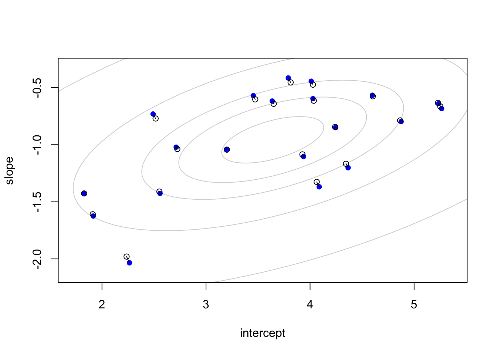
Clearly, the larger the clusters are, the less pooling you get. Makes sense.
Fit a varying intercept & slope model to the running data, using rethinking::ulam or rstanarm::stan_glmer (or both).Visualize the results and briefly compare to results from MN 2.
Start by loading the data.
library(dplyr)
data("cherry_blossom_sample")
g <- cherry_blossom_sample %>%
mutate(age_c = age - 55) Fit the slopes model
dat <- g %>%
na.omit()
m_runner_slopes <- ulam(
alist(
net ~ dnorm(mu, sigma),
mu<- a_runner[runner] + b_runner[runner]*age_c,
c(a_runner,b_runner)[runner] ~ multi_normal(c(a,b), rho, sigma_runner),
a ~ normal(100, 10),
b ~ normal(0, 10),
sigma ~ exponential(0.5),
sigma_runner ~ exponential(0.5),
rho ~ lkj_corr(1) ),
data = dat ,
chains = 4 ,
log_lik = TRUE,
refresh = 0)This recapitulates what we did in MN2, but now with slopes. So I’m going to build on that code.
First, let’s just compare the outputs of both models.
precis(m_runner)36 vector or matrix parameters hidden. Use depth=2 to show them. mean sd 5.5% 94.5% n_eff Rhat4
a_bar 90.535222 2.0028386 87.36810900 93.963952 1799.961731 1.004798
bage 1.044570 0.4467858 0.01004483 1.544718 3.996514 1.528315
sigma 7.385445 3.7616274 4.80776510 14.344067 2.027687 8.924618
sigma_a 10.033949 5.9383652 0.02880836 15.772703 2.093923 4.543091precis(m_runner_slopes)78 vector or matrix parameters hidden. Use depth=2 to show them. mean sd 5.5% 94.5% n_eff Rhat4
a 91.108270 2.1390846 87.585127 94.132511 49.23527 1.095896
b 1.300864 0.2467777 0.897694 1.641791 147.29943 1.049925
sigma 5.011457 0.2939175 4.553756 5.488515 580.20589 1.006673These estimates are fairly similar. I would have expected the posteriors of the beta and alpha estimates to be wider for the slopes model and the sigma estimates to be narrower, but this seem to not exactly be the case. Interesting…
post_a <- extract.samples(m_runner_slopes)$a_runner %>% # get the individuals interceps
as.tibble() %>%
pivot_longer(cols = everything(), names_to = "runner") %>%
group_by(runner) %>%
summarise(intercept = median(value)) %>%
mutate(runner = gsub("V", "", runner) %>% as.factor()) %>%
arrange(runner)Warning: `as.tibble()` was deprecated in tibble 2.0.0.
ℹ Please use `as_tibble()` instead.
ℹ The signature and semantics have changed, see `?as_tibble`.post_b <- extract.samples(m_runner_slopes)$b_runner %>% # get the individual slopes
as.tibble() %>%
pivot_longer(cols = everything(), names_to = "runner") %>%
group_by(runner) %>%
summarise(slope = median(value)) %>%
mutate(runner = gsub("V", "", runner) %>% as.factor()) %>%
arrange(runner)
dat_combined <- dat %>% #add the slopes and intercepts to the dataframe
left_join(post_a, by = "runner") %>%
left_join(post_b, by = "runner") %>%
mutate(unpooled = mean(net)) %>%
ungroup()
dat %>% ggplot(aes(x = age_c, y = net)) +
geom_point() +
geom_abline(intercept = 90.70, slope = 1.23, linetype = "dashed", color = "red") +
theme_classic()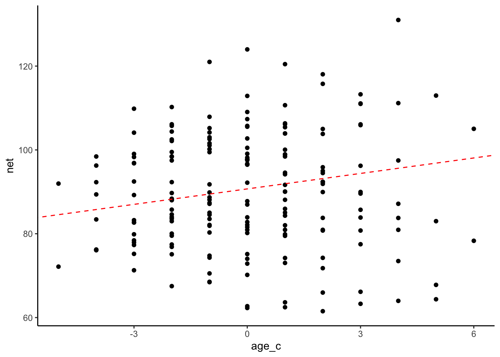
dat_combined %>% ggplot(aes(x = age_c, y = net)) + # again, fill in with numbers from m_sleep
geom_point() +
facet_wrap("runner") +
#geom_abline(aes(intercept = unpooled, slope = 1.23), linetype = "dashed", color = "red")+
geom_abline(aes(intercept = intercept, slope = slope), linetype = "dashed", color = "blue")+
geom_abline(aes(intercept = 90.70, slope = 1.23), linetype = "dashed", color = "black")+
theme_classic()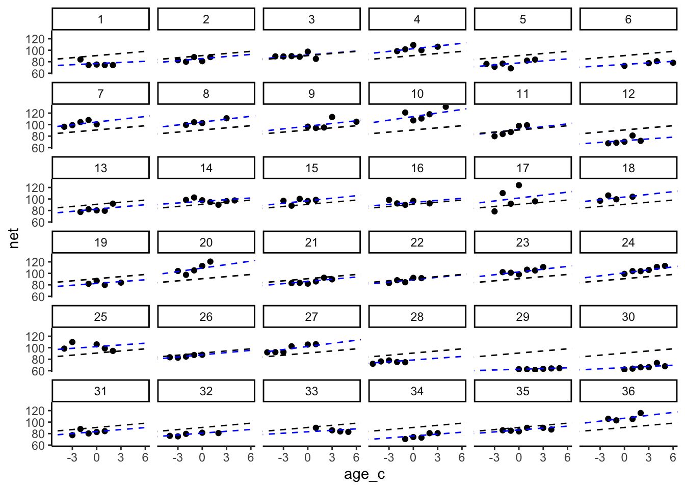
Unsurprisingly, the plots suggest that the slopes models are better at capturing individual variation.
Do the same for the sleepstudy data
Once again, load the data and fit the model.
d <- sleepstudy %>% filter(Days>1) %>% mutate(Days_bl = Days-2)
m_sleep_slopes <- ulam(
alist(
Reaction ~ dnorm(mu, sigma),
mu<- a_subject[Subject] + b_subject[Subject]*Days_bl,
c(a_subject,b_subject)[Subject] ~ multi_normal(c(a,b), rho, sigma_subject),
a ~ normal(250, 200),
b ~ normal(0, 100),
sigma ~ exponential(0.1),
sigma_subject ~ exponential(0.1),
rho ~ lkj_corr(1) ),
data = d ,
chains = 4 ,
log_lik = TRUE,
refresh = 0)post_intercept <- extract.samples(m_sleep_slopes)$a_subject %>%
as.tibble() %>%
pivot_longer(cols = everything(), names_to = "Subject") %>%
group_by(Subject) %>%
summarise(intercept = median(value)) %>%
mutate(Subject = gsub("V", "", Subject) %>% as.integer()) %>%
arrange(Subject)
post_slopes <- extract.samples(m_sleep_slopes)$b_subject %>%
as.tibble() %>%
pivot_longer(cols = everything(), names_to = "Subject") %>%
group_by(Subject) %>%
summarise(slope = median(value)) %>%
mutate(Subject = gsub("V", "", Subject) %>% as.integer()) %>%
arrange(Subject)
d_combined <- d %>% # add each person's intercept, useful for making the figure
mutate(Subject = as.integer(as.factor(Subject))) %>%
left_join(post_intercept, by = "Subject") %>%
left_join(post_slopes, by = "Subject")
d_combined %>% ggplot(aes(x = Days_bl, y = Reaction)) +
geom_point() +
geom_abline(intercept = 267.72, slope = 11.47, linetype = "dashed", color = "red") + # fill in with numbers from m_sleep
theme_classic()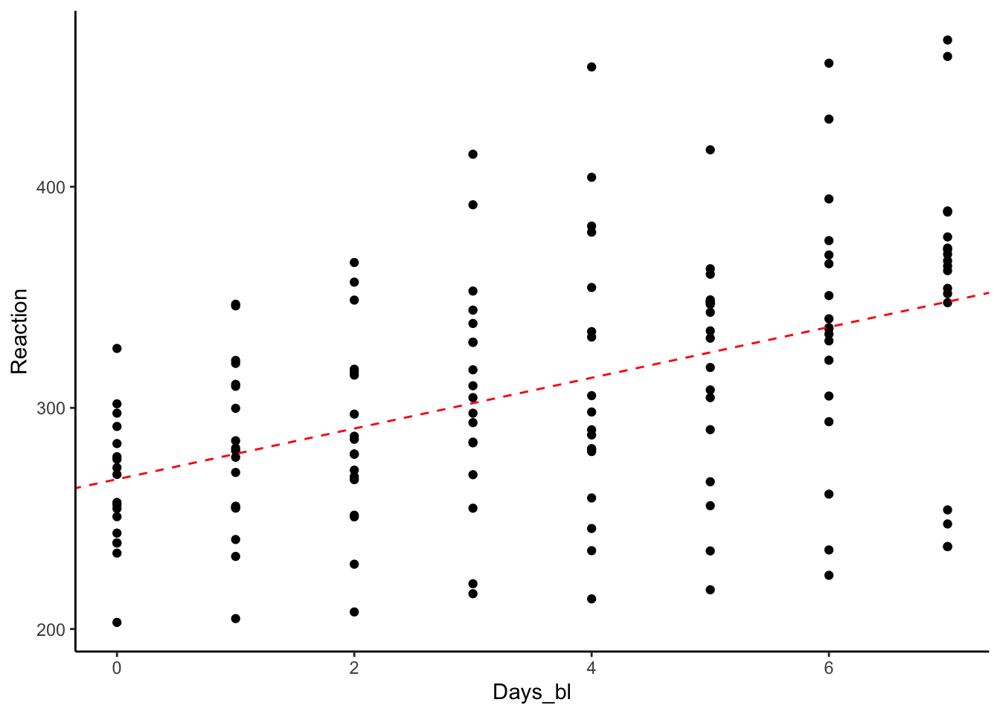
d_combined %>% ggplot(aes(x = Days_bl, y = Reaction)) + # again, fill in with numbers from m_sleep
geom_point() +
facet_wrap("Subject") +
geom_abline(aes(intercept = intercept, slope = slope), linetype = "dashed", color = "blue")+
geom_abline(aes(intercept = 267.72, slope = 11.47), linetype = "dashed", color = "black")+
theme_classic()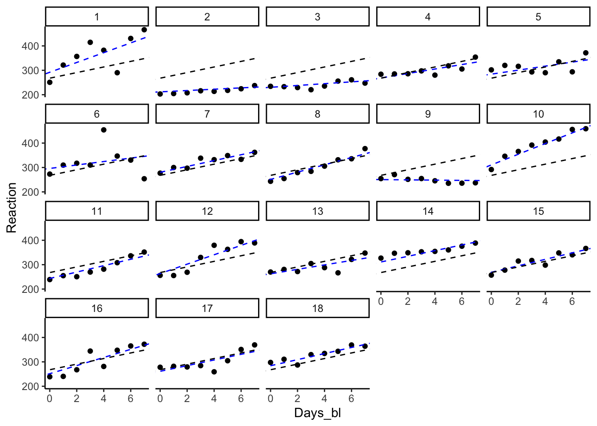
precis(m_sleep)18 vector or matrix parameters hidden. Use depth=2 to show them. mean sd 5.5% 94.5% n_eff Rhat4
a_bar 267.97827 10.678960 250.967945 284.40863 2166.792 0.9993263
b_days 11.44668 1.069715 9.742757 13.14165 1156.530 1.0037860
sigma 30.20498 1.879720 27.341773 33.33951 3283.629 0.9982461
sigma_a 39.52059 6.795701 29.963804 50.89121 2929.177 0.9999578precis(m_sleep_slopes)42 vector or matrix parameters hidden. Use depth=2 to show them. mean sd 5.5% 94.5% n_eff Rhat4
a 267.53457 7.932843 254.802395 279.92827 2096.637 0.9999239
b 11.43181 1.980913 8.319615 14.54037 2305.040 1.0018570
sigma 25.71734 1.763097 22.992873 28.66041 1856.784 1.0028725Again, the precision of the estimates is better for the slopes model, especially for the sigmas, and the individual-level data shows that the indidivual estimates are better too.
Import data used in STV and run the four models discussed in the paper using Rstan (see Stan code in the paper). Run the same models using rstanarm::stan_glmer. Discuss any differences between results from the two programs?
Maybe this is cheating (if it is, I’ll happily do a “kompletering”) but for the STV models, I’ve basically copy-pasted what they did. I had a look in the stan-files, but I can’t really pretend that I understand them.
::: {.panel-tabset}
The following code is taken directly from Shtrivasan et al.
First, I read in the Gibson and Wu data and subset head noun:
rDat<-read.table("data/gibsonwu2012data.txt",header=TRUE)
rDat<-subset(rDat,region=="headnoun")
#Convert subject and item to factors:
rDat$region<-factor(rDat$region)
rDat$subj <- factor(rDat$subj)
rDat$item <- factor(rDat$item)
# Contrast coding
rDat$so <- ifelse(rDat$type == "subj-ext", -1, 1)
# Set up data for Stan:
stanDat<-list(rt = rDat$rt,
so = rDat$so,
N = nrow(rDat))Now we start getting the model. Their first model is just a fixed effects model. Writing it out in McElreath’s style o notation, it might look something like this:
\begin{aligned} \text{Log(RT)}_{i} & \sim \mathrm{Normal}(\mu, \sigma) \\ \mu_i & = b_0 + b_{SO}\text{SO}_i\\ b_0 & \sim \mathrm{Uniform}(-\infty, \infty)\\ b_1 & \sim \mathrm{Uniform}(-\infty,\infty)\\ \sigma_i &\sim \mathrm{Uniform}(0,\infty)\\ \end{aligned}
I’m basing these priors on what Sorensen et al. write:
The prior distributions on the parameters beta and sigma e would ordinarily be declared in the model block. If we don’t declare any prior, it is assumed that they have a uniform prior distribution.
I suppose part of this exercise is comparing the stan default priors against the stanarm default priors, so I’m not going to do much to those either.
With all that said, I’ll run the data pure stan style, using Sorensen’s code
fixEf_stan <- stan(file = "fixEf.stan",
data = stanDat,
iter = 2000, chains = 4)Now to run the same model in stanarm.
print(fixEf_stan, pars = c("beta","sigma_e"), probs = c(0.025, 0.5, 0.975))Inference for Stan model: fixEf-202308031748-1-45f66c.
4 chains, each with iter=2000; warmup=1000; thin=1;
post-warmup draws per chain=1000, total post-warmup draws=4000.
mean se_mean sd 2.5% 50% 97.5% n_eff Rhat
beta[1] 6.06 0 0.02 6.01 6.06 6.11 4135 1
beta[2] -0.04 0 0.03 -0.09 -0.04 0.01 3805 1
sigma_e 0.60 0 0.02 0.56 0.60 0.64 3815 1
Samples were drawn using NUTS(diag_e) at Thu Aug 03 17:48:53 2023.
For each parameter, n_eff is a crude measure of effective sample size,
and Rhat is the potential scale reduction factor on split chains (at
convergence, Rhat=1).posterior_summary(fixEf_arm) %>% round(2) Estimate Est.Error Q2.5 Q97.5
(Intercept) 6.06 0.03 6.01 6.11
so -0.04 0.02 -0.09 0.01
sigma 0.60 0.02 0.56 0.64It seems like for the fixed effects only model, the stan and stanarm produce identical results. This, of course, is a bad model. Let’s see how the packages do with more advanced models.
Okay, here is my take on Sorenson et al’s model 2, written out in McElreath style. Again, it’s crazy to see these uniform priors going to infinity-
\begin{aligned} \text{Log(RT)}_i &\sim \mathrm{Normal}(\mu_i, \sigma_i)\\ \mu &= \alpha + \alpha_{\text{Subjec[i]}}+\alpha_{\text{Item[i]}} + \beta_{so}\times\text{SO}\\ \alpha & \sim \mathrm{Uniform(-\infty, \infty)}\\ \alpha_{\text{Subject}} &\sim \mathrm{Normal}(0, \sigma_{\text{Subject}}) \\ \alpha_{\text{Item}} &\sim \mathrm{Normal}(0, \sigma_{\text{Item}}) \\ \sigma_{\text{Subject}}&\sim \mathrm{Uniform}(0, \infty)\\ \sigma_{\text{item}}&\sim \mathrm{Uniform}(0, \infty)\\ \beta & \sim \mathrm{Uniform(-\infty, \infty)}\\ \sigma &\sim \mathrm{Uniform}(0, \infty) \end{aligned}
Now I run that model, using Sorensen et al’s code.
stanDat<-list(subj = as.integer(factor(rDat$subj)),
item = as.integer(factor(rDat$item)),
rt = rDat$rt,
so = rDat$so,
N = nrow(rDat),
J = length(unique(rDat$subj)),
K = length(unique(rDat$item)))ranInt_stan <- stan(file = "ranInt.stan", data = stanDat,
iter = 2000, chains = 4)And now we do the same thing, but in stanarm. Again, i used prior_summary() to learn my default prior. I think you can quibble with the exponential priors for the sigmas, but overalll, these default priors actually seem pretty sensible to me.
\begin{aligned} \text{Log(RT)}_i &\sim \mathrm{Normal}(\mu_i, \sigma_i)\\ \mu &= \alpha + \alpha_{\text{Subjec[i]}}+\alpha_{\text{Item[i]}} + \beta_{so}\text{SO}\\ \alpha & \sim \mathrm{Normal(6.1, 1.5)}\\ \alpha_{\text{Subject}} &\sim \mathrm{Normal}(0, \sigma_{\text{Subject}}) \\ \alpha_{\text{Item}} &\sim \mathrm{Normal}(0, \sigma_{\text{Item}}) \\ \sigma_{\text{Subject}}&\sim \mathrm{Exponential}(1.7)\\ \sigma_{\text{item}}&\sim \mathrm{Exponential}(1.7)\\ \beta_{so} & \sim \mathrm{Normal(0, 1.5)}\\ \sigma &\sim \mathrm{Exponential}(1.7) \end{aligned}
The code for running the model is also much easier to write!
And if we look at the outputs of the two models side by side, what does it look like?
print(ranInt_stan, pars = c("beta", "sigma_e", "sigma_u", "sigma_w"),
probs=c(0.025, 0.5, 0.975))Inference for Stan model: ranInt-202308031748-1-03dfbe.
4 chains, each with iter=2000; warmup=1000; thin=1;
post-warmup draws per chain=1000, total post-warmup draws=4000.
mean se_mean sd 2.5% 50% 97.5% n_eff Rhat
beta[1] 6.06 0 0.07 5.92 6.06 6.20 555 1
beta[2] -0.04 0 0.02 -0.08 -0.04 0.01 4665 1
sigma_e 0.52 0 0.02 0.49 0.52 0.55 4444 1
sigma_u 0.25 0 0.04 0.18 0.25 0.34 2592 1
sigma_w 0.20 0 0.05 0.12 0.19 0.32 2483 1
Samples were drawn using NUTS(diag_e) at Thu Aug 03 17:48:59 2023.
For each parameter, n_eff is a crude measure of effective sample size,
and Rhat is the potential scale reduction factor on split chains (at
convergence, Rhat=1).summary(ranINT_arm,
pars =c("(Intercept)","so", "sigma", "Sigma[subj:(Intercept),(Intercept)]", "Sigma[item:(Intercept),(Intercept)]" ),
probs = c(0.025, 0.5, 0.975),
digits = 2)
Model Info:
function: stan_lmer
family: gaussian [identity]
formula: log(rt) ~ 1 + (1 | subj) + (1 | item) + so
algorithm: sampling
sample: 4000 (posterior sample size)
priors: see help('prior_summary')
observations: 547
groups: subj (37), item (15)
Estimates:
mean sd 2.5% 50% 97.5%
(Intercept) 6.06 0.07 5.92 6.06 6.20
so -0.04 0.02 -0.08 -0.04 0.01
sigma 0.52 0.02 0.49 0.52 0.55
Sigma[subj:(Intercept),(Intercept)] 0.06 0.02 0.03 0.06 0.11
Sigma[item:(Intercept),(Intercept)] 0.04 0.02 0.01 0.04 0.10
MCMC diagnostics
mcse Rhat n_eff
(Intercept) 0.00 1.00 985
so 0.00 1.00 4990
sigma 0.00 1.00 3447
Sigma[subj:(Intercept),(Intercept)] 0.00 1.00 1299
Sigma[item:(Intercept),(Intercept)] 0.00 1.00 1166
For each parameter, mcse is Monte Carlo standard error, n_eff is a crude measure of effective sample size, and Rhat is the potential scale reduction factor on split chains (at convergence Rhat=1).Well, despite the differences, the estimates seem quite similar to me. The main thing I notice is that the estimates are higher in the stan model, unsurprising given the priors & it seems like setting some sensible priors would be an easy fix.
Okay, now we have this half-way thing. They actually don’t mention it in their paper, or at least the version that I have, but digging into their markdown file, I was able to get a hold of their code. This is the code they use:
Again, if we write that using McElreath’s style of notation, it might look something like this. Because this model isn’t in the version of the paper, I’m not 100% sure about the priors, but this is my buest guess. Also, something nice about McElreath’s notation is that makes it clear that a varying slopes model like this is just a special case of an interaction, but with hyperpriors on the slopes. Nice.
\begin{aligned} \text{Log(RT)}_i &\sim \mathrm{Normal}(\mu_i, \sigma_i)\\ \mu &= \alpha + \alpha_{\text{Subjec[i]}}+\alpha_{\text{Item[i]}} + \beta_{so}\times\text{SO} + \beta_{\text{Item[i]}}\times\text{SO} + \beta_{\text{Subject[i]}}\times\text{SO}\\ \alpha_{\text{Subject}} &\sim \mathrm{Normal}(0, \sigma_{\alpha[\text{Subject}]}) \\ \alpha_{\text{Item}} &\sim \mathrm{Normal}(0, \sigma_{\alpha[\text{Item}]}) \\ \sigma_{\text{Subject}}&\sim \mathrm{Uniform}(0, \infty)\\ \beta_{so} & \sim \mathrm{Uniform(-\infty, \infty)}\\ \beta_{\text{Subject}} &\sim \mathrm{Normal}(0, \sigma_{\beta[\text{Subject}]}) \\ \beta_{\text{Item}} &\sim \mathrm{Normal}(0, \sigma_{\beta[\text{Item}]}) \\ \sigma,\sigma_{\alpha[\text{Subject}[]}, \sigma_{\alpha[\text{Item}[]}, \sigma_{\beta[\text{Subject}[]}, \sigma_{\beta[\text{Item}[]} &\sim \mathrm{Uniform}(0, \infty) \end{aligned}
As for stanarm… I’m not entirely sure how to even write a model like that. The following solution is the closest I can come up with. I think it works, because so only has two levels. So, in practice, what I’m doing is calculating unique intercepts for each combination of subject and so. Well, I feel very uncertain that this is actually doing the same thing as Sorensen et al, but this illustrates that stanarm isn’t well set up to do this wrong thing. I suppose that’s good!
Anyway, this is how I would write it out using McElreath style notation.
\begin{aligned} \text{Log(RT)}_i &\sim \mathrm{Normal}(\mu_i, \sigma_i)\\ \mu &= \alpha + \alpha_{\text{Subject:so[i]}}+\alpha_{\text{Item:so[i]}} + \beta_{so}\text{SO}\\ \alpha & \sim \mathrm{Normal(6.1, 1.5)}\\ \alpha_{\text{Subject}} &\sim \mathrm{Normal}(0, \sigma_{\text{Subject}}) \\ \alpha_{\text{Item}} &\sim \mathrm{Normal}(0, \sigma_{\text{Item}}) \\ \sigma_{\text{Subject:so}}&\sim \mathrm{Exponential}(1.7)\\ \sigma_{\text{item:so}}&\sim \mathrm{Exponential}(1.7)\\ \beta_{so} & \sim \mathrm{Normal(0, 1.5)}\\ \sigma &\sim \mathrm{Exponential}(1.7) \end{aligned}
And this is in r code.
tmp <- rDat %>%
mutate(so = as.factor(so))
ranINT_nocor_arm <- stan_lmer(log(rt) ~ 1 + (1|subj:so) + (1|item:so) + so, data = tmp, chains = 4)Well, the model certainly runs at least. Let’s look at the summary outputs.
print(ranIntSlpNoCorFit,
pars = c("beta", "sigma_e", "sigma_u", "sigma_w"),
probs=c(0.025, 0.5, 0.975))Inference for Stan model: ranIntSlpNoCor-202308031749-1-140534.
4 chains, each with iter=2000; warmup=1000; thin=1;
post-warmup draws per chain=1000, total post-warmup draws=4000.
mean se_mean sd 2.5% 50% 97.5% n_eff Rhat
beta[1] 6.06 0 0.07 5.92 6.06 6.21 815 1.01
beta[2] -0.04 0 0.03 -0.09 -0.04 0.02 2827 1.00
sigma_e 0.52 0 0.02 0.48 0.52 0.55 2894 1.00
sigma_u[1] 0.25 0 0.04 0.18 0.25 0.34 3109 1.00
sigma_u[2] 0.06 0 0.03 0.01 0.05 0.13 76 1.04
sigma_w[1] 0.20 0 0.05 0.12 0.19 0.32 2794 1.00
sigma_w[2] 0.04 0 0.03 0.00 0.04 0.11 141 1.02
Samples were drawn using NUTS(diag_e) at Thu Aug 03 17:49:37 2023.
For each parameter, n_eff is a crude measure of effective sample size,
and Rhat is the potential scale reduction factor on split chains (at
convergence, Rhat=1).round(summary(ranINT_nocor_arm,
pars =c("(Intercept)","so1", "sigma", "Sigma[subj:so:(Intercept),(Intercept)]", "Sigma[item:so:(Intercept),(Intercept)]" ),
probs = c(0.025, 0.5, 0.975),
digits = 2,
)[,],2) mean mcse sd 2.5% 50% 97.5% n_eff
(Intercept) 6.10 0 0.07 5.96 6.10 6.23 1456
so1 -0.07 0 0.10 -0.26 -0.07 0.13 1380
sigma 0.52 0 0.02 0.48 0.52 0.55 3433
Sigma[subj:so:(Intercept),(Intercept)] 0.06 0 0.02 0.04 0.06 0.10 1732
Sigma[item:so:(Intercept),(Intercept)] 0.04 0 0.02 0.02 0.03 0.07 1466
Rhat
(Intercept) 1
so1 1
sigma 1
Sigma[subj:so:(Intercept),(Intercept)] 1
Sigma[item:so:(Intercept),(Intercept)] 1Interestingly, the effect of so is stronger in the stanarm model. Also an effect of the priors or something else? Could also be that I didn’t quite manage to specify the same models.
Now this is the main model, of course. This one has both varying intercepts and varying slopes and they covary. I’ve set myself up for a challenge, writing all these out in McElreath code, but here goes.
\begin{aligned} \text{Log(RT)}_i &\sim \mathrm{Normal}(\mu_i, \sigma_i)\\ \mu &= \alpha_i + \alpha_{\text{Subjec[i]}}+\alpha_{\text{Item[i]}} + \beta_{so,i}\times\text{SO} + \beta_{\text{Item[i]}}\times\text{SO} + \beta_{\text{Subject[i]}}\times\text{SO}\\ \alpha &\sim \mathrm{Uniform}(-\infty, \infty)\\ \begin{bmatrix} \alpha_{subject} \\ \beta_{subject} \end{bmatrix} &\sim \mathrm{MVNormal} \bigg( \begin{bmatrix}0\\ 0\end{bmatrix}, \Sigma_{subject}\bigg) \\ \Sigma_{subject}& = \begin{bmatrix} \sigma_ {\alpha[s]} & 0\\ 0 &\sigma_{\beta[s]} \end{bmatrix} \textbf{R} \begin{bmatrix} \sigma_ {\alpha[s] }& 0\\ 0 &\sigma_{\beta[s]} \end{bmatrix}\\ \begin{bmatrix} \alpha_{item} \\ \beta_{item} \end{bmatrix} &\sim \mathrm{MVNormal} \bigg( \begin{bmatrix}0\\ 0\end{bmatrix}, \Sigma_{item}\bigg) \\ \Sigma_{item}& = \begin{bmatrix}\sigma_ {\alpha[it]} & 0\\ 0 &\sigma_{\beta[it]} \end{bmatrix} \textbf{R} \begin{bmatrix}\sigma_ {\alpha[it]} & 0\\ 0 &\sigma_{\beta[it] }\end{bmatrix}\\ \beta_{so} & \sim \mathrm{Uniform(-\infty, \infty)}\\ \sigma,\sigma_{\alpha[\text{s}[]}, \sigma_{\alpha[\text{it}[]}, \sigma_{\beta[\text{s}[]}, \sigma_{\beta[\text{it}[]} &\sim \mathrm{Uniform}(0, \infty)\\ \textbf{R}& \sim \mathrm{LKJcorr}(?) \end{aligned}
Okay, that was not easy to do. Anyway, to fit this model, I once again use Sorensens code to run this model.
ranIntSlpFit <- stan(file = "ranIntSlp.stan", data = stanDat,
iter = 2000, chains = 4)And then I do the same in stanarm. Stanarm automatically uses the following priors:
\begin{aligned} \text{Log(RT)}_i &\sim \mathrm{Normal}(\mu_i, \sigma_i)\\ \mu &= \alpha + \alpha_{\text{Subjec[i]}}+\alpha_{\text{Item[i]}} + (\beta_{so} + \beta_{\text{Item[i]}} + \beta_{\text{Subject[i]}})\times\text{SO}_i\\ \alpha &\sim \mathrm{Normal}(6.1, 1.5)\\ \begin{bmatrix} \alpha_{subject} \\ \beta_{subject} \end{bmatrix} &\sim \mathrm{MVNormal} \bigg( \begin{bmatrix}0\\ 0\end{bmatrix}, \Sigma_{subject}\bigg) \\ \Sigma_{subject}& = \begin{bmatrix} \sigma_ {\alpha[s]} & 0\\ 0 &\sigma_{\beta[s]} \end{bmatrix} \textbf{R} \begin{bmatrix} \sigma_ {\alpha[s] }& 0\\ 0 &\sigma_{\beta[s]} \end{bmatrix}\\ \begin{bmatrix} \alpha_{item} \\ \beta_{item} \end{bmatrix} &\sim \mathrm{MVNormal} \bigg( \begin{bmatrix}0\\ 0\end{bmatrix}, \Sigma_{item}\bigg) \\ \Sigma_{item}& = \begin{bmatrix}\sigma_ {\alpha[it]} & 0\\ 0 &\sigma_{\beta[it]} \end{bmatrix} \textbf{R} \begin{bmatrix}\sigma_ {\alpha[it]} & 0\\ 0 &\sigma_{\beta[it] }\end{bmatrix}\\ \beta_{so} & \sim \mathrm{Uniform(0, 3)}\\ \sigma,\sigma_{\alpha[\text{s}[]}, \sigma_{\alpha[\text{it}[]}, \sigma_{\beta[\text{s}[]}, \sigma_{\beta[\text{it}[]} &\sim \mathrm{Exponential}(1.7)\\ \textbf{R}& \sim \mathrm{LKJcorr}(1) \end{aligned}
tmp <- rDat %>%
mutate(so = as.factor(so))
ranINT_cor_arm <- stan_lmer(log(rt) ~ 1 + (1 + so|subj) + (1+so|item) + so, data = tmp, chains = 4)The first thing I notice, is that the stanarm version was the slowest to run. But let’s compare the model outputs!
print(ranIntSlpFit, pars = c("beta", "sigma_e", "sigma_u", "sigma_w"),
probs = c(0.025, 0.5, 0.975))Inference for Stan model: ranIntSlp-202308031749-1-6268a5.
4 chains, each with iter=2000; warmup=1000; thin=1;
post-warmup draws per chain=1000, total post-warmup draws=4000.
mean se_mean sd 2.5% 50% 97.5% n_eff Rhat
beta[1] 6.06 0 0.07 5.92 6.06 6.20 1641 1
beta[2] -0.04 0 0.03 -0.09 -0.04 0.02 4461 1
sigma_e 0.51 0 0.02 0.48 0.51 0.55 5020 1
sigma_u[1] 0.25 0 0.04 0.18 0.25 0.34 1552 1
sigma_u[2] 0.07 0 0.03 0.01 0.07 0.14 1358 1
sigma_w[1] 0.21 0 0.05 0.13 0.20 0.33 1553 1
sigma_w[2] 0.04 0 0.03 0.00 0.03 0.10 1849 1
Samples were drawn using NUTS(diag_e) at Thu Aug 03 17:49:58 2023.
For each parameter, n_eff is a crude measure of effective sample size,
and Rhat is the potential scale reduction factor on split chains (at
convergence, Rhat=1).round(summary(ranINT_cor_arm,
pars =c("(Intercept)","so1", "sigma", "Sigma[subj:(Intercept),(Intercept)]", "Sigma[item:(Intercept),(Intercept)]", "Sigma[subj:so1,(Intercept)]","Sigma[subj:so1,so1]", "Sigma[item:so1,(Intercept)]","Sigma[item:so1,so1]" ),
probs = c(0.025, 0.5, 0.975)
)[,],2) mean mcse sd 2.5% 50% 97.5% n_eff
(Intercept) 6.10 0 0.08 5.94 6.10 6.25 1271
so1 -0.07 0 0.06 -0.19 -0.07 0.04 3180
sigma 0.51 0 0.02 0.48 0.51 0.55 4906
Sigma[subj:(Intercept),(Intercept)] 0.09 0 0.03 0.04 0.08 0.16 1791
Sigma[subj:so1,(Intercept)] -0.03 0 0.02 -0.08 -0.03 0.00 2223
Sigma[subj:so1,so1] 0.02 0 0.02 0.00 0.02 0.07 1921
Sigma[item:(Intercept),(Intercept)] 0.04 0 0.02 0.01 0.03 0.09 1649
Sigma[item:so1,(Intercept)] 0.00 0 0.01 -0.02 0.00 0.02 3220
Sigma[item:so1,so1] 0.01 0 0.01 0.00 0.01 0.04 1785
Rhat
(Intercept) 1
so1 1
sigma 1
Sigma[subj:(Intercept),(Intercept)] 1
Sigma[subj:so1,(Intercept)] 1
Sigma[subj:so1,so1] 1
Sigma[item:(Intercept),(Intercept)] 1
Sigma[item:so1,(Intercept)] 1
Sigma[item:so1,so1] 1The outputs are again pretty similar. But again, Stanarm gives slightly larger estimates for the effect os so, but also slightly larger posteriors. Why this happens is a little bit beyond be, but if I were to guess, it might be differences in the underlying MCMC machinery, or in the priors, doing something where the